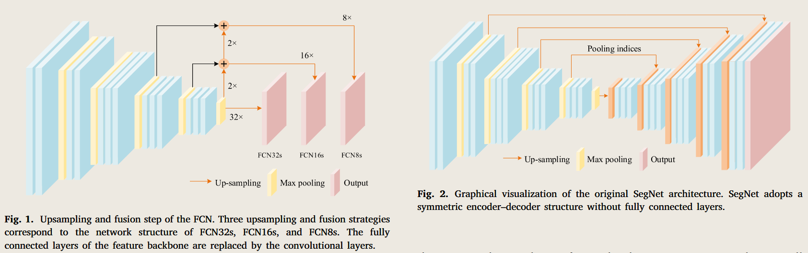
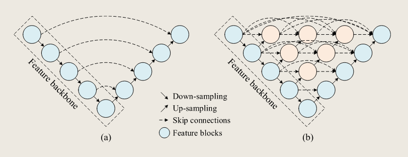
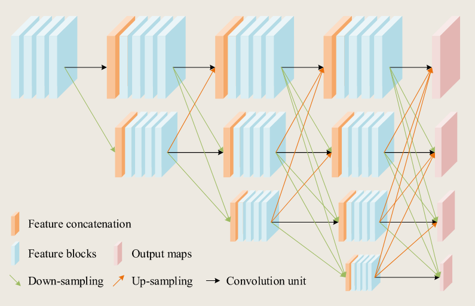
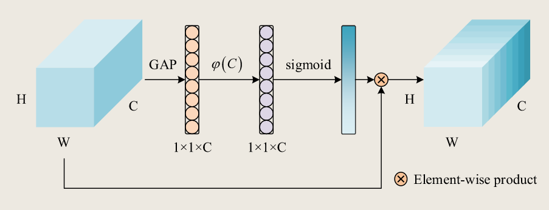
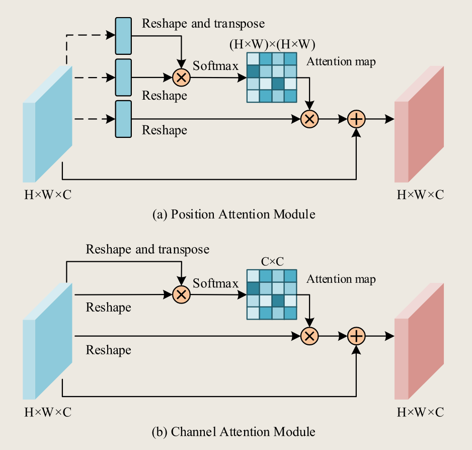
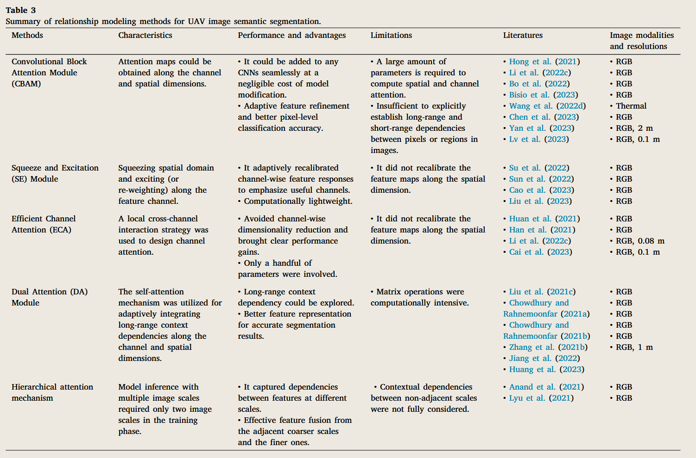
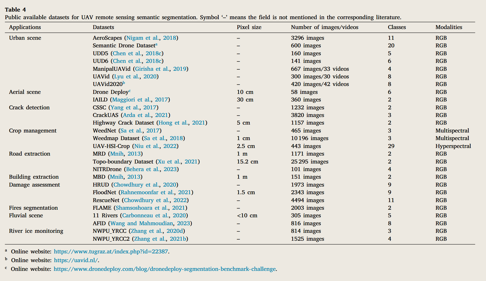

# Methods and datasets on semantic segmentation for Unmanned Aerial Vehicle remote sensing images: A review
- 【Original Link】 Methods and datasets on semantic segmentation for Unmanned Aerial Vehicle remote sensing images：A review
- Department of Information and Communication Engineering, University of Electronic Science and Technology of China, Chengdu, 611731, Sichuan, PR China
- Volume 211, May 2024, Pages 1-34
- Authors
- Jian Cheng
- Changjian Deng
- Yanzhou Su
- Zeyu An
- Qi Wang
# Abstract
Unmanned Aerial Vehicle (UAV) has seen a dramatic rise in popularity for remote-sensing image acquisition and analysis in recent years.
近年来，无人机（UAV）在遥感图像采集和分析领域的流行度大幅上升。
It has brought promising results in low-altitude monitoring tasks that require detailed visual inspections.
它在需要详细目视检查的低空监测任务中取得了令人鼓舞的成果。
Semantic segmentation is one of the hot topics in UAV remote sensing image analysis, as its capability to mine contextual semantic information from UAV images is crucial for achieving a fine-grained understanding of scenes.
语义分割是无人机遥感图像分析中的热门话题之一，其从无人机图像中挖掘上下文语义信息的能力对于实现对场景的细致理解至关重要。
However, in the remote sensing field, recent reviews have not focused on combining ‘‘UAV remote sensing’’ and ‘‘semantic segmentation’’ to summarize the advanced works and future trends.
然而，在遥感领域，近期综述并未将 “无人机遥感” 与 “语义分割” 结合起来，以总结先进的工作成果和未来趋势。
In this study, we focus primarily on describing various recent semantic segmentation methods applied in UAV remote sensing images and summarizing their advantages and limitations. According to the distinction in modeling contextual semantic information, we have categorized and outlined the methods based on graph-based contextual models and deep-learning-based models.
本研究主要介绍了无人机遥感图像中应用的各种近期语义分割方法，并总结其优缺点。根据对上下文语义信息建模的区分，我们基于基于图的上下文模型和基于深度学习的模型对方法进行了分类和概述。
Publicly available UAV-based image datasets are also gathered to encourage systematic research on advanced semantic segmentation methods. We provide quantitative results of representative methods on two high-resolution UAV-based image datasets for fair comparisons and discussions in terms of semantic segmentation accuracy and model inference efficiency.
还收集了公开可用的无人机图像数据集，以鼓励系统性研究高级语义分割方法。我们提供了两种高分辨率无人机图像数据集中代表性方法的定量结果，以便公平比较和讨论语义分割准确性和模型推断效率。
Besides, this paper concludes some remaining challenges and future directions in semantic segmentation for UAV remote sensing images and points out that methods based on deep learning will become the future research trend.
此外，本文总结了无人机遥感图像语义分割中剩余的一些挑战和未来方向，并指出基于深度学习的方法将成为未来研究趋势。
# Introduction
Semantic segmentation is the process of dividing an image into disjoint regions of the same class or semantics and labeling these regions with pixel-level annotations, where each pixel of the given image requires a label of the desired object class (Yu et al., 2018b; Mo et al., 2022).
语义分割是将图像划分为同一类或语义的不相交区域，并用像素级注释标记这些区域的过程，其中给定图像的每个像素都需要对目标对象类别进行标签（Yu 等，2018b;Mo 等，2022）。
Unlike image classification, which identifies the primary content of an entire image and categorizes it into a specific class, semantic segmentation provides detailed delineations of multiple classes and their respective regions in the image (Yuan et al., 2021)
与图像分类不同，后者是识别整张图像的主要内容并将其归类到特定类别，语义分割则提供了图像中多个类别及其相应区域的详细划分（Yuan 等，2021）
In fact, image semantic segmentation is derived from image segmentation (Ohta et al., 1978), but puts more emphasis on capturing the semantic information of spatial context, so that the segmented areas have semantic meaning.
事实上，图像语义分割源自图像分割（Ohta 等，1978），但更强调捕捉空间上下文的语义信息，使分割区域具有语义意义。
It is the perceptual basis of many computer vision tasks and has been widely employed in diverse image analysis applications, such as the natural and medical image parsing (Yu et al., 2018b; Guo et al., 2018; Asgari Taghanaki et al., 2021), automatic driving systems (Siam et al., 2017; Feng et al., 2020), road extraction (Abdollahi et al., 2020), perception of urban features (Neupane et al., 2021), landuse mapping (Zang et al., 2021), and many others.
它是许多计算机视觉任务的感知基础，并被广泛应用于多种图像分析领域，如自然和医学图像解析（Yu 等，2018b;Guo 等，2018;Asgari Taghanaki 等，2021），自动驾驶系统（Siam 等，2017;Feng 等，2020）、道路提取（Abdollahi 等，2020）、城市特征感知（Neupane 等，2021）、土地利用地图绘制（Zang 等，2021）等。
Remote sensing images collected by various platforms, such as satellites, aircraft, and UAVs (Toth and Jóźków, 2016; Bhardwaj et al., 2016), provide the data basis for semantic segmentation.
遥感图像由卫星、飞机和无人机等多种平台收集的图像（Toth 和 Jóźków，2016;Bhardwaj 等，2016），为语义分割提供了数据基础。
The continuously evolving semantic segmentation technology not only demonstrates superior performance in diverse and data-rich remote sensing problems (Ball et al., 2017; Yuan et al., 2021), but its integration with UAVs also offers a feasible solution for the fine-grained scene analysis of low-altitude remote sensing (Toth and Jóźków, 2016; Bhardwaj et al., 2016; Yao et al., 2019; Nex et al., 2022; Zhang and Zhu, 2023).
持续演进的语义分割技术不仅在多样且数据丰富的遥感问题中表现出优异性能（Ball 等，2017;Yuan 等，2021），其与无人机的集成也为低空遥感的细粒度场景分析提供了可行的解决方案（Toth 和 Jóźków，2016;Bhardwaj 等，2016;Yao 等，2019;Nex 等，2022;Zhang 和 Zhu，2023）。
The UAV platforms, also known as aerial robots or drones, have demonstrated many unique advantages compared with satellite remote sensing platforms, such as lower flight altitude close to the ground surface, well-controlled path planning without the restriction of revisit intervals, flexible flight schedules to access specific areas, flexible optical sensor integration, and especially, lower developing and operational costs for commercial and academic purposes (Yao et al., 2019; Osco et al., 2021; Zhang and Zhu, 2023).
无人机平台，也称为空中机器人或无人机，相比卫星遥感平台展现出许多独特优势，如靠近地面的较低飞行高度、无重访间隔限制的良好路径规划、灵活的飞行计划以进入特定区域、灵活的光学传感器集成，尤其是在商业和学术用途上更低的开发和运营成本（Yao 等，2019;Osco 等，2021;Zhang 和 Zhu，2023）。
Thanks to the flexibility of flying altitudes and sensor integration, UAVs are suitable for resource management and visual inspection tasks that require high labor costs or may affect personal safety, such as bridge condition assessment (Liang et al., 2023), insulator inspections (Ma et al., 2021), early wildfire detection (Bouguettaya et al., 2022c), and bridge damage detection (Feroz and Abu Dabous, 2021).
得益于飞行高度的灵活性和传感器集成，无人机适合资源管理和目视检查任，这些需要高人工成本或可能影响个人安全的任务，如桥梁状况评估（Liang 等，2023）、绝缘体检查（马等，2021）、早期野火检测（布盖塔亚等，2022c）以及桥梁损坏检测（费罗兹和阿布达布斯，2021）。
The hopeful prospect of UAV applications has been well demonstrated and tested in the current literature.
无人机应用的前景在现有文献中已被充分验证和验证。
For instance, in forestry applications (Torresan et al., 2017; Guimarães et al., 2020; Diez et al., 2021), some efforts apply UAVs to pest infestation monitoring (Lehmann et al., 2015), forest fire detection (Yuan et al., 2015), individual tree detection (Chadwick et al., 2020; Gibril et al., 2021), tree species classification (Fujimoto et al., 2019; Kentsch et al., 2020; Egli and Höpke, 2020), among others.
例如，在林业应用中（Torresan 等，2017;Guimarães 等，2020;Diez 等，2021），部分研究将无人机应用于害虫侵扰监测（Lehmann 等，2015）、森林火灾检测（Yuan 等，2015）、单棵树木检测（Chadwick 等，2020;Gibril 等，2021），树种分类（Fujimoto 等，2019;Kentsch 等，2020;Egli 和 Höpke，2020），等。
In damage assessment tasks, relevant literature has demonstrated the efficiency and adaptability of analyzing structure cracks (Zhong et al., 2018; Han et al., 2022), bridge inspection and management (Ayele et al., 2020; Feroz and Abu Dabous, 2021), and disaster damage mapping (Kerle et al., 2019).
在损伤评估任务中，相关文献已证明结构裂纹分析的效率和适应性（Zhong 等，2018;Han 等，2022），桥梁检查与管理（Ayele 等，2020;Feroz 和 Abu Dabous，2021），以及灾害损害测绘（Kerle 等，2019）。
In precision agriculture (Adão et al., 2017; Tsouros et al., 2019), many advanced works have focused on weed mapping (Huang et al., 2018a; Sa et al., 2018; Deng et al., 2020), crop lodging detection (Song et al., 2020; Yang et al., 2020; Su et al., 2022), vegetation growth and health monitoring (Jung et al., 2018; Han et al., 2018; Kerkech et al., 2018, 2020), and many others.
在精准农业中（Adão 等，2017;Tsouros 等，2019），许多先进研究聚焦于杂草测绘（Huang 等，2018a;Sa 等，2018; 邓等，2020），作物倒伏检测（宋等，2020;Yang 等，2020;Su 等，2022），植被生长与健康监测（Jung 等，2018;Han 等，2018;Kerkech 等，2018,2020），以及许多其他研究。
Moreover, other literature in which the use of UAV delivered promising results in monitoring and counting wildlife (Chamoso et al., 2014; Sundaram and Loganathan, 2020), land use and land cover (LULC) (Zhang et al., 2017; Al-Najjar et al., 2019), urban mapping (Chen et al., 2018c; Lyu et al., 2020), and 3D mapping applications (Nex and Remondino, 2014; Kölle et al., 2021).
此外，其他文献中无人机在监测和计数野生动物方面取得了有希望的成果（Chamoso 等，2014;Sundaram 和 Loganathan，2020），土地利用与土地覆盖（LULC）（Zhang 等，2017;Al-Najjar 等，2019），城市制图（Chen 等，2018c;Lyu 等，2020），以及三维映射应用（Nex 和 Remondino，2014;Kölle 等，2021）。
Among these applications, the combination of UAV remote sensing and image semantic segmentation exhibits several distinctive advantages compared with satellite remote sensing.
在这些应用中，无人机遥感与图像语义分割的结合相比卫星遥感展现出多项独特优势。
Firstly, UAV-based semantic segmentation is more suitable for practical application scenarios requiring higher temporal and spatial resolution, such as environmental and agricultural monitoring (Adão et al., 2017; Tsouros et al., 2019), emergency response (Shamsoshoara et al., 2021), and disaster assessment (Rahnemoonfar et al., 2021; Chowdhury et al., 2022, 2020).
首先，基于无人机的语义分割更适合需要更高时间和空间分辨率的实际应用场景，如环境和农业监测（Adão 等，2017;Tsouros 等，2019）、应急响应（Shamsoshoara 等，2021）和灾难评估（Rahnemoonfar 等，2021;Chowdhury 等，2022,2020）。
Besides, semantic segmentation models can extract diverse and finegrained semantic feature representations from high-resolution remote sensing images captured at different altitudes and angles by UAVs, contributing to the comprehensive understanding of complex scenes from multi-view directions.
此外，语义切割模型还能从无人机在不同高度和角度拍摄的高分辨率遥感图像中提取多样且细粒度的语义特征表示，有助于从多视角方向全面理解复杂场景。
Hence, UAV-based image semantic segmentation plays a crucial role in image analysis tasks with fine semantic objects and complex backgrounds, such as urban scene perception (Chen et al., 2018c; Nigam et al., 2018; Lyu et al., 2020) and crack detection (Zhong et al., 2018; Feroz and Abu Dabous, 2021; Han et al., 2022; Liang et al., 2023).
因此，基于 UAV 的图像语义分割在涉及精细语义对象和复杂背景的图像分析任务中起着关键作用，如城市场景感知（Chen 等，2018c;Nigam 等，2018;Lyu 等，2020）和裂纹检测（Zhong 等，2018;Feroz 和 Abu Dabous，2021;Han 等，2022;Liang 等，2023）。
Additionally, autonomous UAVs without human intervention have been the research focus in recent years, which requires UAVs to possess independent capabilities for scene perception, data processing, and decision-making (Nex et al., 2022).
此外，近年来研究重点关注无人机自主无人机，要求无人机具备独立的场景感知、数据处理和决策能力（Nex 等，2022）。
The development and application of UAV platforms have contributed to the emergence of comprehensive reviews.
无人机平台的发展和应用促进了综合评审的出现。
Great efforts had been made to summarize the research status and specific applications of UAVs in various fields, such as 3D mapping for geomatics applications (Nex and Remondino, 2014), urban land cover classification (Yan et al., 2015), glaciological research and applications (Bhardwaj et al., 2016), automatic cadastral mapping (Crommelinck et al., 2016), agriculture and forestry (Adão et al., 2017; Guimarães et al., 2020), structural damage mapping (Kerle et al., 2019), monitoring in mining areas (Ren et al., 2019), and cultural heritage and archaeology (Themistocleous, 2020).
在总结无人机在多个领域的研究现状和具体应用方面，已付出了大量努力，如地理信息技术应用的三维制图（Nex 和 Remondino，2014）、城市土地覆盖分类（Yan 等，2015）、冰川学研究与应用（Bhardwaj 等，2016）、自动地籍测绘（Crommelinck 等，2016）、农业和林业（Adão 等， 2017;Guimarães 等，2020 年）、结构损伤测绘（Kerle 等，2019 年）、矿区监测（任等，2019 年）以及文化遗产与考古学（Themistocleous，2020 年）。
These reviews provided an overview of data acquisition sensors, data processing and data analysis techniques, and practical applications in their respective research fields.
这些综述概述了数据采集传感器、数据处理和分析技术及其在各自研究领域的实际应用。
Moreover, some other reviews were not limited to specific research fields and comprehensively summarized the advanced technologies, broad applications, and future trends from the UAV-based remote sensing perspective.
此外，一些综述不仅限于特定研究领域，全面总结了基于无人机的遥感技术、广泛应用和未来趋势。
Colomina and Molina (2014) presented a discussion about the evolution and advanced technology of Unmanned Aerial Systems (UAS) in the field of photogrammetry and remote sensing.
Colomina 和 Molina（2014）就无人机系统（UAS）在摄影测量和遥感领域的演变与先进技术进行了讨论。
Yao et al. (2019) provided a comprehensive review of recent advanced studies involving UAV sensors, data analysis, and their remote sensing applications.
Yao 等人（2019）对近期涉及无人机传感器、数据分析及其遥感应用的先进研究进行了全面综述。
Nex et al. (2022) investigated the best practices of remote sensing and mapping applications by UAVs and discussed the future trend and impact. Unfortunately, only a few of these reviews briefly mentioned high-level scene understanding and semantic analysis methods that related to pixel-accurate semantic segmentation for UAV-based images.
Nex 等人（2022）研究了无人机遥感和制图应用的最佳实践，并讨论了未来趋势和影响。遗憾的是，只有少数综述简要提及与无人机图像像素精确语义分割相关的高级场景理解和语义分析方法。
For instance, Crommelinck et al. (2016) and Kerle et al. (2019) had mentioned the applications of random fields and convolutional neural networks for UAV image analysis, but the summary of the characteristics of different data analysis methods is still lacking.
例如，Crommelinck 等（2016）和 Kerle 等（2019）提到了随机场和卷积神经网络在无人机图像分析中的应用，但不同数据分析方法的特性总结仍然不足。
Nex et al. (2022) briefly summarized commonly used semantic segmentation methods and best practices, but did not analyze the advantages and disadvantages of semantic segmentation methods in detail.
Nex 等人（2022）简要总结了常用的语义分割方法及其最佳实践，但未详细分析语义分割方法的优缺点。
More recently, Deep Learning (DL) has a profound impact on remote sensing image semantic segmentation (Kotaridis and Lazaridou, 2021; Neupane et al., 2021; Yuan et al., 2021).
近年来，深度学习（DL）对遥感图像语义分割产生了深远影响（Kotaridis 和 Lazaridou，2021;Neupane 等，2021;Yuan 等，2021）。
As of recently, some literature reviews combining DL and UAV image parsing tasks focus on various approaches within different task-oriented applications.
最近，一些结合深度学习和无人机图像解析任务的文献综述聚焦于不同面向任务的应用中的不同方法。
For instance, Bouguettaya et al. (2022c) briefly introduced DL-based algorithms applied to early wildfire detection, such as image classification, object detection, and semantic segmentation.
例如，Bouguettaya 等人（2022c）简要介绍了应用于早期野火检测的基于 DL 的算法，如图像分类、物体检测和语义分割。
Bouguettaya et al. (2022a) reported object-based and pixel-based crop classification methods combining DL-based algorithms.
Bouguettaya 等人（2022a）报告了结合 DL 算法的基于对象和像素的作物分类方法。
Bouguettaya et al. (2022b) summarized various types of DL-based architectures for vehicle detection in UAV images.
Bouguettaya 等人（2022b）总结了无人机图像中基于 DL 的各种车辆检测架构。
Shahi et al. (2023) reviewed the recent advances in crop disease detection of UAV remote sensing based on machine learning and deep learning technologies.
Shahi 等人（2023）回顾了基于机器学习和深度学习技术的无人机遥感作物病害检测的最新进展。
Osco et al. (2021) and Nex et al. (2022) are more concerned with DL-based methods as a future trend for the field of UAV remote sensing.
Osco 等（2021）和 Nex 等（2022）更关注基于 DL 的方法，视其为无人机遥感领域的未来趋势。
Although, from these recent reviews, various DL-based methods have been validated in many UAV image analysis tasks, such as image classification, object detection, and semantic segmentation, a comprehensive summary and comparison of the characteristics, advantages, and limitations of semantic segmentation methods combined with UAV remote sensing images is currently absent.
尽管这些最新综述已验证多种基于 DL 的方法在许多无人机图像分析任务中，如图像分类、物体检测和语义分割，但目前尚缺乏对语义分割方法与无人机遥感图像结合的特性、优势和局限性的全面总结与比较。
Therefore, it is necessary to summarize the characteristics and development of specific semantic segmentation algorithms, provide scholars and practitioners with the quantitative comparison of representative models, as well as identify remaining challenges and future research directions in the image semantic segmentation of UAV remote sensing.
因此，有必要总结特定语义分割算法的特性和发展，向学者和实践者提供代表性模型的定量比较，并识别无人机遥感图像语义分割的剩余挑战和未来研究方向。
Different from orbital and other aerial sensing methods of acquisition, the remote sensing images captured from UAVs have the characteristics of higher resolution, complex scenes, and appearance variations caused by multi-direction angles of view (Nigam et al., 2018; Chen et al., 2018c; Lyu et al., 2020).
与轨道及其他空中感测采集方法不同，从无人机捕获的遥感图像具有更高分辨率、复杂场景以及多方向视角引起的外观变化（Nigam 等，2018;Chen 等，2018c;Lyu 等，2020）。
Typically, semantic segmentation methods designed for natural images or remote sensing images require single-channel or multi-channel images of a fixed size as the data input (Yu et al., 2018b; Dias et al., 2020; Asgari Taghanaki et al., 2021; Kotaridis and Lazaridou, 2021; Yuan et al., 2021).
通常，为自然图像或遥感图像设计的语义分割方法需要以固定大小的单通道或多通道图像作为数据输入（Yu 等，2018b;Dias 等，2020;Asgari Taghanaki 等，2021;Kotaridis 和 Lazaridou，2021 年；Yuan 等，2021）。
By slightly changing the input image scale and the number of input image channels of the model structure, these methods can also be applied to process UAV-acquired remote sensing images (Huang et al., 2018b, 2021a; Osco et al., 2021).
通过稍微改变输入图像比例和模型结构的输入图像通道数，这些方法也可以应用于处理无人机采集的遥感图像（Huang 等，2018b，2021a;Osco 等，2021）。
Besides, we found that back-end users also prefer to make minor modifications to the internal architecture of models, which have been thoroughly validated for semantic segmentation tasks in natural or remote sensing images, to accomplish semantic segmentation for UAV-based images (Sui et al., 2020; Barmpoutis et al., 2020; Huang et al., 2021a).
此外，我们发现后端用户也更倾向于对模型内部架构做小幅修改，这些模型已经过充分验证，适用于自然或遥感图像的语义分割任务，以实现基于无人机的图像语义分割（Sui 等，2020;Barmpoutis 等，2020;Huang 等，2021a）。
Although performance-proven image semantic segmentation models have been shown to be applicable to UAV-based images, the off-the-shelf models may not always offer the optimal solution for UAV-based image semantic segmentation (Nex et al., 2022).
尽管经过性能验证的图像语义分割模型已被证明可应用于无人机图像，但现成的模型可能并不总是为无人机图像语义分割提供最佳解决方案（Nex 等，2022）。
There remains a need to explore unique spatial, spectral, geometric, and multi-modal patterns (Beleznai et al., 2018; Maimaitijiang et al., 2020; Song et al., 2020) in UAV remote sensing images to design effective feature representations of semantic objects for accurate image semantic segmentation.
仍然需要探索独特的空间、光谱、几何和多模态模式（Beleznai 等，2018;Maimaitijiang 等，2020;Song 等，2020）在无人机遥感图像中用于设计有效的语义对象特征表示，实现准确的图像语义分割。
Based on the differences in modeling semantic contextual information, semantic segmentation methods for UAV remote sensing images can be divided into two categories: graphbased contextual models and DL-based models.
基于对语义上下文信息建模的差异，无人机遥感图像的语义分割方法可分为两类：基于图的上下文模型和基于 DL 的模型。
The former explicitly establishes stochastic dependencies between pixels or regions by probabilistic undirected graphs (Jordan, 2004; Drton and Maathuis, 2017) to integrate local or global spatial context information, while the latter adaptively extracts high-level semantic features of semantic objects in images (LeCun et al., 2015).
前者通过概率无向图明确建立了像素或区域之间的随机依赖关系（Jordan，2004;Drton 和 Maathuis，2017）以整合局部或全局的空间上下文信息，而后者则自适应地提取图像中语义对象的高层次语义特征（LeCun 等，2015）。
Besides, most advanced semantic segmentation works applied to UAV-based images did not open-source their datasets due to flight rules and potential confidentiality.
此外，大多数用于无人机图像的高级语义分割研究因飞行规则和潜在保密性问题，未将数据集开源。
To reduce the labor cost for investigating relevant open-source UAV remote sensing image datasets, another motivation for this review is to summarize publicly available datasets and list the corresponding parameters, such as applications, spatial resolution, classes, and modalities.
为了降低研究相关开源无人机遥感图像数据集的人工成本，本综述的另一个动机是总结公开数据集并列出相应参数，如应用、空间分辨率、类别和模态。
We concentrate our review on advanced methods and available datasets for semantic segmentation applied to UAV optical imagery, rather than onboard instrumentation, payload, flight autonomy, data acquisition techniques, or specific applications.
我们重点回顾应用于无人机光学影像的语义分割的先进方法和可用数据集，而非机载仪器、有效载荷、飞行自主性、数据采集技术或具体应用。
The remainder of the paper is organized as follows.
论文其余部分的组织如下。
Section 2 presents the graph-based contextual models for semantic segmentation and analyzes the advantages and limitations of the individual models according to the model characteristics.
第二部分介绍了基于图的语义分割上下文模型，并根据模型特性分析各模型的优缺点。
Section 3 reviews the popular semantic segmentation methods built on the DL framework, including encoder–decoder architectures, multi-scale and feature fusion strategies, relationship modeling methods, vision transformer architectures, and light-weight methods.
第三部分回顾基于 DL 框架的流行语义分割方法，包括编码器 - 解码器架构、多尺度和特征融合策略、关系建模方法、视觉变换器架构以及轻量级方法。
Section 4 summarizes the available datasets for UAV-based image semantic segmentation.
第四节总结了基于无人机的图像语义分割可用的数据集。
Section 5 provides an experimental evaluation of representative semantic segmentation models on two highresolution UAV-based datasets.
第五节对两个高分辨率无人机数据集上的代表性语义分割模型进行了实验评估。
Semantic segmentation accuracy and model inference efficiency are the main aspects to be analyzed and discussed in our experimental assessments.
语义分割的准确性和模型推断效率是我们实验评估中主要需要分析和讨论的方面。
Section 6 provides a general summary of semantic segmentation models for UAV-based images as well as describes the remaining challenges and future research directions.
第六节概述了基于无人机图像的语义分割模型，并描述了剩余挑战和未来研究方向。
Section 7 concludes the paper with a brief discussion of future trends and prospects.
第 7 节以对未来趋势和前景的简要讨论结束了本文。
# Methods based on graph-based contextual models
基于基于图的上下文模型方法
Individual pixels in a UAV image are insufficient to convey specific semantic meanings, but the image containing all pixels exhibits spatial contextual semantic information, such as scene details, semantic objects, and spatial relationships, among others.
无人机图像中的单个像素不足以传达特定的语义意义，但包含所有像素的图像展现了空间上下文语义信息，如场景细节、语义对象和空间关系等。
Hence, one feasible approach for semantic feature extraction is to establish dependencies between pixels or homogeneous regions within the image.
因此，一种可行的语义特征提取方法是建立图像中像素或同质区域之间的依赖关系。
Graphbased contextual models (Jordan, 2004; Drton and Maathuis, 2017) are practical methods that explicitly establish stochastic dependencies between pixels or regions using probabilistic theories to capture spatial contextual semantic information (Yu et al., 2018b).
基于图的上下文模型（Jordan，2004;Drton 和 Maathuis， 2017）是一种实用方法，通过概率理论明确建立像素或区域之间的随机依赖关系，以捕捉空间上下文语义信息（Yu 等，2018b）。
Furthermore, the considerable amount of complex semantic information within the UAV images can vary with changes in the scene, camera view, and flight altitude.
此外，无人机图像中大量的复杂语义信息会随着场景、摄像机视角和飞行高度的变化而变化。
Graph-based contextual models can reduce the mis-classification caused by this complexity by integrating semantic information from the neighborhoods when assigning class labels to each pixel or region in a given image (Solberg et al., 1996; Tso and Mather, 1999; Zheng and Wang, 2015; Yao et al., 2015; Gu et al., 2017; Yang et al., 2018).
基于图的上下文模型可以通过在给图像中的每个像素或区域分配类别标签时整合邻域的语义信息，减少因复杂性导致的错误分类（Solberg 等，1996;Tso 和 Mather，1999; 郑和王，2015;Yao 等，2015;Gu 等，2017;Yang 等，2018）。
Graph-based probabilistic models attribute the feature learning task to computing the probability distribution of variables.
基于图的概率模型将特征学习任务归因于计算变量的概率分布。
The Markov Random Field (MRF) and the Conditional Random Field (CRF) are the most popular graph-based contextual semantic algorithms.
马尔可夫随机场（MRF）和条件随机场（CRF）是最流行的基于图的上下文语义算法。
Both approaches map images onto an undirected graph model, where each vertex in the graph represents a pixel or feature vector of the image, and the edges between the vertices represent contextual dependencies.
这两种方法都将图像映射到无向图模型上，图中的每个顶点代表图像的一个像素或特征向量，顶点之间的边代表上下文依赖关系。
# MRF
MRF is essentially a probabilistic generative model that predicts each class of images based on the joint probability distribution (Solberg et al., 1996; Tso and Mather, 1999; Kasetkasem and Varshney, 2002; Zheng et al., 2017; Yu et al., 2018b).
MRF 本质上是一个概率生成模型，基于联合概率分布预测每类图像（Solberg 等，1996;Tso 和 Mather，1999;Kasetkasem 和 Varshney，2002 年；Zheng 等，2017;Yu 等，2018b）。
The pixel distribution in an image can be viewed as the MRF since each pixel is related to its corresponding neighborhood.
图像中的像素分布可以看作 MRF，因为每个像素都与其对应的邻域相关。
It has been regarded as the practical model for describing spatial patterns and image characteristics.
它被视为描述空间模式和图像特征的实用模型。
Let Y denote the label field with L semantic classes, i.e. , and the x is the observed image.
设 Y 表示具有 L 语义类的标签域，即，X 是观测到的图像。
According to the Bayesian formula, the posterior distribution should be
根据贝叶斯公式，后验分布应为
where is the likelihood function and is the part that describes the joint probability distribution of the label field.
其中 是似然函数，是描述标签场联合概率分布的部分。
Based on the assumption that the label field is independent and identically distributed, then the segmentation problem is equivalent to maximum a posterior (MAP)
基于标签场独立且分布均匀的假设，则分割问题等价于最大后验（MAP）
MRF has been adopted to model interactions of image features or contextual information of UAV photogrammetry and remote sensing tasks, such as target detection and tracking (Yu et al., 2006; Wan et al., 2019), image despeckling (Alparone et al., 2010), individual tree crown delineation (Harikumar et al., 2020), image classification (Fang et al., 2018b), and image segmentation (Zhang et al., 2013).
MRF 已被用于建模无人机摄影测量和遥感任务（如目标检测和跟踪）中图像特征或上下文信息的相互作用（Yu 等，2006;Wan 等，2019）、图像去斑点（Alparone 等，2010）、单个树冠的划分（Harikumar 等，2020）、图像分类（Fang 等，2018b）以及图像分割（Zhang 等，2013）。
However, the original pixel-based MRF is difficult to model the spatial pattern of the entire high-resolution image, it is more effective in tasks that only need to model a small number of pixels (Wan et al., 2019).
然而，原始基于像素的 MRF 难以建模整个高分辨率图像的空间模式，在只需建模少量像素的任务中效果更佳（Wan 等，2019）。
像素级 MRF 不适合用于建模整个高分辨率图像的全局空间结构，但在只涉及少量像素或局部区域的任务中仍然具有较好的效果。
Besides, the local Markovian property of the pixel-based MRF may not be preserved due to image transformations such as subsampling, block averaging, and subtraction of two images (Kasetkasem and Varshney, 2002; Gu et al., 2017).
此外，基于像素的 MRF 的局部马尔可夫性质可能无法保持，因为图像变换如子采样、块平均和两张图像的相减（Kasetkasem 和 Varshney，2002;Gu 等，2017）。
A multi-layer MRF can be established to achieve stable image point classification by constructing various features describing image points, such as color and texture, to model the feature interaction between layers (Kato et al., 2002; Benedek et al., 2007).
可以通过构建描述图像点的各种特征（如颜色和纹理）来建立多层 MRF，以实现稳定的图像点分类，以模拟层间特征的相互作用（Kato 等，2002;Benedek 等，2007）。
However, this approach can introduce more computational overhead proportional to the number of layers.
然而，这种方法可能会带来与层数成正比的计算开销。
To improve the image segmentation efficiency, Alparone et al. (2010) adopted the constrained MRF based on a binary tree structure (D’Elia et al., 2003) to recursively divide the image into smaller regions.
为了提高图像分割效率，Alparone 等人（2010）采用了基于二叉树结构的约束 MRF（D’Elia 等，2003），递归地将图像划分为更小的区域。
But this approach is still pixel-oriented and unsuitable for high-resolution UAV images with extensive texture details.
但这种方法仍然是像素导向的，不适合具有大量纹理细节的高分辨率无人机图像。
A set of similar and connected pixels in an image can be grouped as an object with meaningful representation according to specific properties such as shape, color, and spectral information (Levinshtein et al., 2009; Achanta et al., 2012; Crommelinck et al., 2017; He et al., 2019). The object-based image analysis (OBIA) (Castilla and Hay, 2008; Lang, 2008; Blaschke, 2010; Chen et al., 2018a; Hossain and Chen, 2019) can serve as an alternative to the per-pixel analysis method, since it cannot only reduce the computational overhead by decreasing the number of vertex of MRF but also reduce the impact of complex texture details within the pixel-set object on the semantic representation of the target to be segmented.
图像中一组相似且相连的像素可以根据形状、颜色和光谱信息等特定属性被归为具有有意义表示的对象（Levinshtein 等，2009;Achanta 等，2012;Crommelinck 等，2017; 他等，2019）。基于对象的图像分析（OBIA）（Castilla 和 Hay，2008;Lang，2008;Blaschke，2010 年；Chen 等，2018a;Hossain 和 Chen，2019）可以作为每像素分析方法的替代方案，因为它不仅通过减少 MRF 顶点数来降低计算开销，还能减少像素集对象中复杂纹理细节对待分割目标语义表示的影响。
The MRF model can also be extended to object-based MRF (OMRF) for semantic segmentation, in which each vertex of the adjacency graph represents a region over-segmented by object-based methods instead of pixels (Zheng and Wang, 2014; Zheng et al., 2017).
MRF 模型也可以扩展到基于对象的 MRF（OMRF）进行语义分割，其中邻接图的每个顶点代表一个被基于对象的方法而非像素过度分割的区域（Zheng 和 Wang，2014;Zheng 等，2017）。
For instance, Zhao et al. (2022) utilized the multi-scale line segment detector to obtain power line region proposals, then combined the Gaussian mixture model (GMM) and the weighted region adjacency graph (WRAG) to construct an OMRF-based power line detection model.
例如，赵等人（2022）利用多尺度线段探测器获得了电力线区域的建议，随后结合高斯混合模型（GMM）和加权区域邻接图（WRAG）构建基于 OMRF 的电力线检测模型。
GMM constructed the likelihood function to describe the conditional probability, and the WRGA utilized the spatial contextual information and interactions between objects.
GMM 构建了似然函数来描述条件概率，WRGA 利用了空间上下文信息和物体间的交互。
adopted an improved watershed algorithm to avoid over-segmentation and combined with edge-based coupled MRF to reduce false positives caused by speckles in PolSAR images.
采用改进的流域算法以避免过度分割，并结合基于边缘的耦合 MRF，减少 PolSAR 图像中斑点引起的误报。
It enhanced the accuracy of change detection between two UAVSAR images while also improving the weak missing discontinuous boundaries between the image objects.
它提高了两幅 UAVSAR 图像之间变化检测的准确性，同时也改善了图像对象之间缺失的弱不连续边界。
Both utilized the MRF to model the interaction between pixel groups generated from UAV-based images and assign the pixels belonging to a certain pixel group to have the same label.
两者都利用 MRF 模拟由无人机图像生成的像素组之间的相互作用，并将属于某个像素组的像素赋予相同标签。
However, improper modeling of spatial relationships of OMRF might lead to misclassification or over-smoothing for high-resolution remote sensing images.
然而，OMRF 空间关系建模不当可能导致高分辨率遥感图像的误分类或过度平滑。
Besides, most MRF-based semantic segmentation methods did not fully consider hierarchical semantic information or interlayer relationships between pyramid multi-resolution images.
此外，大多数基于 MRF 的语义分割方法并未充分考虑层级语义信息或金字塔多分辨率图像之间的层间关系。
Yao et al. (2021) proposed pyramid OMRF with dual-track information transmission (POMRF-DIT) to mine and transfer pyramid multilayer information.
Yao 等人（2021）提出了带有双轨信息传输（POMRF-DIT）的金字塔 OMRF，用于挖掘和传输金字塔多层信息。
Close-loop dual-track paths were also adopted to optimize the segmentation of each layer and achieve more physically meaningful structure modeling and interlayer information transfer mechanism.
还采用了闭环双轨路径，以优化每层的分段，实现更具物理意义的结构建模和层间信息传递机制。
MRF provides a solution for the semantic segmentation of UAV-based images, which constructs the interactions between pixels or groups of pixels with joint probability distribution to capture the semantic context information so that the segmentation results can be given semantic meanings.
MRF 为无人机图像的语义分割提供了解决方案，该方法通过构建像素或像素组之间的交互关系，并以联合概率分布捕捉语义上下文信息，从而赋予分割结果语义意义。
Nevertheless, there are still many difficulties in applying MRF to high-resolution UAV remote sensing images. For instance, the updating and inference process of the joint probability distribution in MRF is complicated and time-costing (Zheng et al., 2017).
然而，将 MRF 应用于高分辨率无人机遥感图像仍存在许多困难。例如，MRF 中联合概率分布的更新和推断过程复杂且耗时（Zheng 等，2017）。
In addition, the object scale variation and complex texture of UAV images make it difficult to design reasonable semantic rules.
此外，无人机图像的物体尺度变化和复杂的纹理使得设计合理的语义规则变得困难。
Only a few works are found in the literature where MRF is utilized for the semantic segmentation of UAV images.
文献中只有少数文献将 MRF 用于无人机图像的语义分割。
In many scenarios, CRF is a more commonly used graph-based contextual model, which will be described in the next section.
在许多场景中，CRF 是一种更常用的基于图的上下文模型，将在下一节中详细说明。
# CRF
Conditional Random Field
条件随机场
Unlike MRF, CRF for semantic segmentation is a probabilistic discriminant model that specifies the conditional probability distribution of the semantic labels given the observation data (Lafferty et al., 2001).
与 MRF 不同，CRF 用于语义分割是一种概率判别模型，指定了在给定观察数据后语义标签的条件概率分布（Lafferty 等，2001）。
It had cast a bright light on many aspects of the graph-based context tasks and profoundly impacted the semantic segmentation of UAV remote sensing images.
它为基于图表的上下文任务的许多方面带来了亮点，并深刻影响了无人机遥感图像的语义分割。
The inference process in CRF usually consists of association potential and interaction potential.
CRF 中的推断过程通常包括关联势和相互作用势。
Let S denotes all nodes that reflect the pixels or regions in an image, the index i ∈ S indicates the node site while the j represents the node site in a neighborhood Ni ∈ S.
设 S 表示所有反映图像像素或区域的节点，索引 i∈S 表示节点站点，j 表示邻域 Ni∈S 中的节点站点。
The posterior probability distribution P (y|x) directly modeled by the CRF can be described as (Kumar and Hebert, 2006; Hoberg et al., 2014)
CRF 直接建模的后验概率分布 P（y|x）可以描述为（Kumar 和 Hebert，2006;Hoberg 等，2014）
：配分函数（partition function /normalization constant）
：一元势函数（unary potential）
：二元势函数（pairwise potential）
：节点（像素）集合
：节点 的邻域
where the term is the association (or unary) potential and the term is the interaction (or pair-wise) potential. The association potential reflects the applicability to a pixel or region xi given a label , while the interaction potential models the relationship between label and , which can be regarded as a constraint to ensure the consistency of semantic label predictions. is the partition function that normalized the sum of potentials. is defined as
其中项 是关联势（或一元势），项 是相互作用（或两对势）。关联势反映了给定标签 时，像素或区域习适用性，而交互势能则模拟标签 与 之间的关系，这可被视为确保语义标签预测一致性的约束。 是归一化势和的配分函数。 定义为
The unary potential of CRF for semantic segmentation is generally defined by the label assignment probability at pixels.
CRF 在语义分割中的一元势能通常由像素处的标签分配概率定义。
In the early UAV semantic segmentation tasks, Random Forest (Quang et al., 2015), Support Vector Machine (Zhang et al., 2018), or boosted classifiers (Girisha et al., 2019; Shotton et al., 2009) have been adopted to obtain the unary potential.
在早期的无人机语义分割任务中，随机森林（Quang 等，2015）、支持向量机（Zhang 等，2018）或增强分类器（Girisha 等，2019;Shotton 等，2009）已被采用来获得一元势。
However, constructing unary potential through traditional classifiers lacks the integration of spatial context information, which may lead to misclassifications of pixel labels in high-resolution UAV images (Zhang et al., 2018).
然而，通过传统分类器构建一元势缺乏空间上下文信息的整合，可能导致高分辨率无人机图像中像素标签的错误分类（Zhang 等，2018）。
Zeggada et al. (2018), in another way, subdivided UAV images into a grid of tiles of equal size, then combined the Bag of Words, Autoencoder, and Multi-Layer Perceptron to construct the unary potential of CRF.
Zeggada 等人（2018）则以另一种方式将无人机图像细分为大小相等的网格，然后结合词袋、自编码器和多层感知器，构建了 CRF 的一元势能。
It independently integrated the local spatial context of each grid in UAV imagery to extract compact signatures that effectively describe the corresponding tiles.
它独立整合了无人机图像中每个网格的局部空间上下文，提取出有效描述对应瓦片的紧凑签名。
In the subsequent practices (Zhang et al., 2019b; Chiu et al., 2020; Huang et al., 2020; Lobo Torres et al., 2020; Girisha et al., 2020; Song et al., 2020; Zhong et al., 2020; Girisha et al., 2021a; Zhang et al., 2022a) of semantic segmentation for UAV images, Deep Convolutional Neural Networks (DCNNs) have gradually replaced the unary potential construction methods that require hand-crafted feature extraction.
在后续实践中（Zhang 等，2019b;Chiu 等，2020;Huang 等，2020;Lobo Torres 等，2020;Girisha 等，2020;Song 等，2020;Zhong 等，2020;Girisha 等，2021a;Zhang 等人，2022a）关于无人机图像语义分割的应用，深度卷积神经网络（DCNNs）逐渐取代了需要手工特征提取的一元势构建方法。
The stacked convolutional layers of DCNNs expand the receptive field (Krizhevsky et al., 2012) layer by layer, making it possible to automatically capture rich spatial contextual feature information of UAV images.
堆叠卷积的 DCNN 层扩展感受场（Krizhevsky 等，2012），使得能够自动捕捉无人机图像丰富的空间上下文特征信息。
The last feature layer with softmax activation function (Krizhevsky et al., 2012; Long et al., 2015; Badrinarayanan et al., 2017) can be utilized as the label assignment probability required by the unary potential. Thus, researchers can focus on designing pair-wise potential functions applied to different UAV images and scenarios to capture the dependencies between pixels or objects.
== 最后一个带有 softmax 激活函数的特征层（Krizhevsky 等，2012;Long 等，2015;Badrinarayanan 等，2017）可以作为一元势所需的标签赋值概率。== 因此，研究人员可以专注于设计应用于不同无人机图像和场景的成对势函数，以捕捉像素或物体之间的依赖关系。
The pair-wise potential of the most commonly used plain CRF is usually defined by the Potts model or its variants (Yu et al., 2018b; Girisha et al., 2019).
最常用的纯 CRF 的两对势能通常由 Potts 模型或其变体定义（Yu 等，2018b;Girisha 等，2019）。
However, the plain CRF is limited to capturing long-range contextual semantic information due to the improper penalizing function.
然而，由于惩罚函数不当，纯 CRF 仅限于捕捉长距离语义信息。
Kong et al. (2020) argued that the part of UAV images where complex textures exist might result in label misclassification, and it was not convincible to penalize all inconsistent labels equally using the Potts model.
Kong 等人（2020）认为，存在复杂纹理的无人机图像部分可能导致标签错误分类，且用 Potts 模型对所有不一致标签均等惩罚是不可信的。
The pair-wise potentials applied to the semantic segmentation of UAV images can vary according to the specific tasks. For instance, Kong et al. (2020) considered that pixels with similar positions, similar colors, and small height differences should have a higher probability of assigning the same label for urban semantic segmentation.
应用于无人机图像语义分割的两对势能会根据具体任务而异。例如，Kong 等人（2020）认为位置相似、颜色相似且高度差异较小的像素，在城市语义分割中应有更高的概率被赋予相同标签。
The pair-wise potential they designed had considered features such as color, position, height, and scale. It achieved a more reasonable penalty for inconsistent label predictions of the semantic segmentation for UAV images.
他们设计的配对潜力考虑了颜色、位置、高度和比例等特征。它对无人机图像语义分割标签预测不一致的惩罚更为合理。
Furthermore, the long-range and shortrange dependencies between pixels are also essential for capturing the global contextual information needed for the semantic segmentation of UAV images.
此外，像素之间的长距离和短距离依赖关系对于捕捉无人机图像语义分割所需的全局上下文信息也至关重要。
Fully connected CRF (FC-CRF) (Krähenbühl and Koltun, 2011) contains pair-wise potentials of all individual pixels in an image.
全连通 CRF（FC-CRF）（Krähenbühl 和 Koltun，2011）包含图像中所有单个像素的两两势。
The spatial dependency between pixels established by FC-CRF is more effective in reducing the cluttered pixel-level misclassification in the semantic segmentation map and improving the smoothness of the segmentation boundaries of semantic objects (Quang et al., 2015; Zhang et al., 2018; Zhuo et al., 2018a; Girisha et al., 2019; Zhang et al., 2019b; Zhuo et al., 2019; Chiu et al., 2020; Huang et al., 2020; Lyu et al., 2020; Zhang et al., 2022a).
FC-CRF 确立的像素间空间依赖性在减少语义分割图中像素层级的杂乱错误分类和改善语义对象分割边界的平滑性方面更为有效（Quang 等，2015;Zhang 等人，2018;Zhuo 等，2018a;Girisha 等，2019;Zhang 等人，2019b;Zhuo 等，2019;Chiu 等，2020;Huang 等，2020;Lyu 等，2020;Zhang 等，2022a）。
In addition, FC-CRF can also be extended from the spatial dimension to the spatio-temporal dimension for comprehensive context integration and accurate scene understanding of UAV-based videos (Cao et al., 2019; Lyu et al., 2020).
此外，FC-CRF 还可以从空间维度扩展到时空维度，实现无人机视频的全面上下文整合和准确的场景理解（Cao 等，2019;Lyu 等，2020）。
However, the FC-CRF was no longer popular in recent remote sensing image parsing tasks due to the expensive computational overhead. To solve the abovementioned shortcomings of dense CRFs, Teichmann and Cipolla (2018) proposed Convolutional CRF (ConvCRF) based on the conditional independence assumption between two pixels.
然而，由于计算开销较高，FC-CRF 在近期遥感图像解析任务中已不再流行。为了解决上述密集 CRF 的不足，Teichmann 和 Cipolla（2018）提出了基于两个像素之间条件独立性假设的卷积 CRF（ConvCRF）。
The model utilized a convolutional neural network to construct unary potentials and set the interaction potentials to zero as the Manhattan distance between pixels exceeded the threshold. Based on the locality assumption, the processing speed of segmentation increased by two orders of magnitude while improving segmentation accuracy.
该模型利用卷积神经网络构造一元势，并在像素间曼哈顿距离超过阈值时将交互势设为零。基于局部性假设，分割的处理速度提高了两个数量级，同时提高了切割准确性。
Song et al. (2020) used ConvCRF as the post-processing of SegNet for sunflower lodging detection.
Song 等人（2020）使用 ConvCRF 作为向日葵倒伏检测的 SegNet 后处理。
This algorithm combination corrected the wrong prediction of the lodging area in UAV images and further optimized the segmentation boundaries, achieving the balance between segmentation accuracy and computational overhead.
该算法组合纠正了无人机图像中倒伏区域的错误预测，并进一步优化了分割边界，实现了分割精度与计算开销之间的平衡。
Here we introduce several public graph-based models and highlight their advantages and shortcomings, shown in Table 1. Although only a few works can be found where the graph-based models are utilized in recent research on semantic segmentation for UAV remote sensing images, the ideas of integrating semantic information by interaction terms between pixels or regions have encouraged the relationship modeling methods in deep feature-learned methods. We refer readers to Section 3.3 for more details.
这里我们介绍了几个基于公开的基于图的模型，并重点介绍它们的优缺点，见表 1。尽管目前在无人机遥感图像语义分割研究中应用基于图的模型的作品很少，但通过像素或区域间交互项整合语义信息的理念，推动了深度特征学习方法中关系建模方法的发展。更多详情请阅读第 3.3 节。
Summary of graph-based contextual models for UAV semantic segmentation.
无人机语义分割的基于图的上下文模型总结。
| 类别 | 模型 | 应用 | 图像模态 | 特点 | 性能与优势 | 局限性 |
|---|---|---|---|---|---|---|
| MRF | OMRF | 输电线检测 （Zhao et al., 2022） |
RGB | 使用 GMM 和 WRAG 来定义目标之间的关系 | ・具有更好的抗干扰能力 ・提供了较高的检测精度并减少了误检线条 |
・对复杂图像需要额外的计算时间 ・参数选择较为复杂 |
| MRF | POMRF-DIT | 航空场景 （Yao et al., 2021） |
RGB | 基于金字塔的目标级 MRF，引入双通道信息传输以挖掘和传递金字塔多层信息 | ・能够从金字塔结构中挖掘并传递图像信息 ・分割收敛速度更快 |
・对光谱特征相似的目标容易产生误分类 |
| CRF | TextonBoost | 航空场景 （Girisha et al., 2019） |
RGB | 利用纹理布局和低层图像特征，引入像素间相关性以实现语义分割 | ・学习纹理特征以捕获图像中的纹理布局上下文 ・能够捕获更多图像细节 |
・基于像素的 CRF ・处理时间较长 |
| CRF | AF-CRF | 城市场景 （Kong et al., 2020） |
RGB、DSM | 将多尺度和注意力分析引入分割过程 | ・采用均值场近似的快速求解算法以加速计算 ・提供更高的精度和分割置信度 |
・过度考虑长程依赖可能导致误分类 |
| CRF | DCNN + DenseCRF | 城市 / 航空场景 （Zhang et al., 2019b； Chiu et al., 2020； Huang et al., 2020； Lobo Torres et al., 2020； Girisha et al., 2020； Zhong et al., 2020； Girisha et al., 2021a； Zhang et al., 2022a） |
RGB、红外 | 使用稠密 CRF 作为后处理，对卷积神经网络输出进行细化 | ・能生成更加精细的分割结果 ・修正了 CNN 中的一些误分类 |
・稠密 CRF 中成对势函数的计算复杂度较高 |
| CRF | DCNN + ConvCRF | 农作物倒伏检测 （Song et al., 2020） |
RGB、红边、近红外（NIR） | 每幅图像的单势由 CNN 的 softmax 输出设定，并采用局部性假设设计成对势 | ・降低了成对势的计算复杂度 ・更快且更具实用性 |
・ConvCRF 在计算效率与像素间长程依赖之间存在折中 |
# Methods based on deep-learning models
基于深度学习模型的方法
UAV-based images with higher resolution typically contain semantic objects or regions that hold intricate and detailed semantic representations.
基于无人机的更高分辨率图像通常包含包含复杂且详细语义表示的语义对象或区域。
Hand-engineered graph-based contextual models struggle to cope with these intricate semantic representations, and these techniques of image semantic segmentation are gradually being overtaken by DL-based architectures in UAV remote sensing (Osco et al., 2021).
手工设计的基于图的上下文模型难以应对这些复杂的语义表示，这些图像语义分割技术正逐渐被无人机遥感中的基于 DL 架构所取代（Osco 等，2021）。
DLbased semantic segmentation not only eliminates the tedious process of hand-crafted feature extraction with the well-designed combinations of various trainable operators, such as convolution layers, linear layers, and activation layers (Yu et al., 2018b; Yuan et al., 2021), but also presents better segmentation performance to the complex semantic representations of high-resolution images in UAV remote sensing.
基于 DL 的语义分割不仅消除了手工制作特征提取的繁琐过程，采用了多种可训练算符的良好组合，如卷积层、线性层和激活层（Yu 等，2018b;Yuan 等，2021），同时也在无人机遥感中对高分辨率图像的复杂语义表示提供了更好的分割性能。
Our literature review in this section focuses on five aspects of DL-based advances for image semantic segmentation in UAV remote sensing: (1) Encoder–decoder architectures; (2) Multi-scale and feature fusion strategies; (3) Relationship modeling methods; (4) Vision transformer architectures; (5) Light-weight methods.
本节文献综述聚焦于无人机遥感图像语义分割基于 DL 的五个方面：
- 编码 - 解码器架构
- 多尺度和特征融合策略
- 关系建模方法
- 视觉变换器架构
- 轻量化方法。
# Encoder–decoder architectures
In previous studies, the encoder–decoder architecture had been widely adopted to achieve pixel-wise labeling when designing DCNN for semantic segmentation tasks.
在以往的研究中，编码器 - 解码器架构已被广泛采用，以实现针对语义分割任务的 DCNN 实现像素标记。
The encoder–decoder architectures usually consist of two primary components.
编码器 - 解码器架构通常由两个主要组成部分组成。
The first component is the encoder structure, which is generally composed of an efficient backbone of a pre-trained classification network.
第一个组成部分是编码器结构，通常由预训练分类网络的高效骨干组成。
It aims to reduce the spatial scale of the input image and extract feature maps with context semantic information.
其目标是降低输入图像的空间尺度，并提取带有上下文语义信息的特征图。
Besides, pooling-based and convolution-based down-sampling strategies have been wildly adopted as the standard techniques in the encoder process for increasing the local prospective field and reducing computation costs.
此外，基于池和卷积的下采样策略已被广泛采用为编码器过程中的标准技术，用于增加局部前景场并降低计算成本。
Another component is the decoder structure, which typically utilizes bilinear interpolation or deconvolution (Dumoulin and Visin, 2016) up-sample strategies.
另一个组成部分是解码器结构，通常采用双线性插值或反卷积（Dumoulin 和 Visin，2016）上采样策略。
It maps the low-resolution feature blocks of the encoder structure back to feature blocks or prediction outputs with higher spatial resolution.
它将编码器结构中的低分辨率特征块映射回具有更高空间分辨率的特征块或预测输出。
It maps the low-resolution feature blocks of the encoder structure back to feature blocks or prediction outputs with higher spatial resolution.
它将编码器结构中的低分辨率特征块映射回具有更高空间分辨率的特征块或预测输出。
# FCN
The pioneering end-to-end encoder–decoder structure for the pixelwise semantic segmentation tasks is fully convolutional neural network (FCN) proposed by Long et al. (2015).
像素语义分割任务的开创性端到端编码 - 解码结构是 Long 等人（2015）提出的全卷积神经网络（FCN）。
FCN adopted the performanceproven convolutional classification network, such as VGG16 (Simonyan and Zisserman, 2015), as the feature encoder to integrate contextual and location information.
FCN 采用了性能验证的卷积分类网络，如 VGG16（Simonyan 和 Zisserman，2015），作为整合上下文和位置信息的特征编码器。
As shown in Fig. 1, FCN replaced the fully connected layers of CNN with only convolutional layers, making it possible to predict the class labels of all pixels with different spatial resolutions.
如图 1 所示，FCN 用卷积层替代了 CNN 的全连通层，使得预测所有具有不同空间分辨率像素的类标签成为可能。
The structures of three types of FCNs followed the principle of combining coarse to fine layers to make the local predictions consistent with the global context information. For instance, the prediction result of FCN32s was computed by up-sampling the last max-pooling layer of VGG16 by a factor of 32, while that of FCN8s could be obtained by up-sampling the combination of the last three max-pooling layers by a factor of 8.
三种类型的全卷积网络（FCN）的结构遵循从粗到细层结合的原则，以使局部预测与全局上下文信息保持一致。例如，FCN32s 的预测结果是通过对 VGG16 的最后一个最大池化层进行 32 倍上采样计算得到的，而 FCN8s 的预测结果则可以通过对最后三个最大池化层的组合进行 8 倍上采样得到。
Fig. 1. Upsampling and fusion step of the FCN. Three upsampling and fusion strategies correspond to the network structure of FCN32s, FCN16s, and FCN8s. The fully connected layers of the feature backbone are replaced by the convolutional layers.
图 1。FCN 的上采样和融合步骤。三种上采样和融合策略对应 FCN32、FCN16 和 FCN8 的网络结构。特征骨干的全连通层被卷积层取代。
Fig. 2. Graphical visualization of the original SegNet architecture. SegNet adopts a symmetric encoder–decoder structure without fully connected layers.
图 2。原始 SegNet 架构的图形可视化。SegNet 采用对称编码 - 解码结构，没有完全连接的层。
As far as we know, FCN had been widely used for weed mapping (Huang et al., 2018a; Deng et al., 2020), crop lodging detection (Yang et al., 2020), road extraction (Kestur et al., 2018; Varia et al., 2018; Senthilnath et al., 2020), cadastral boundary extraction (Xia et al., 2019a,b), building footprint detection (Zhuo et al., 2018b), and many others. Comparative experiments (Huang et al., 2018c; Xia et al., 2019b; Yang et al., 2020) also demonstrated that the FCN had more excellent semantic aggregation ability and outstanding image processing efficiency than traditional image segmentation methods, such as CRF, Maximum Likelihood Classification (MLC), and Multi-Resolution Segmentation (MRS).
据我们所知，FCN 已被广泛用于杂草测绘（Huang 等，2018a; 邓等，2020）、作物沉伏检测（Yang 等，2020）、道路开采（Kestur 等，2018;Varia 等，2018;Senthilnath 等，2020）、地籍边界提取（Xia 等，2019a，b）、建筑基准检测（Zhuo 等，2018b）以及其他许多方法。比较实验（Huang 等，2018c;Xia 等，2019b;Yang 等，2020）还证明，FCN 比传统图像分割方法（如 CRF、最大似然分类（MLC）和多分辨率分割（MRS））具有更优异的语义聚合能力和卓越的图像处理效率。
However, there were still some drawbacks of FCN in handling high-resolution UAV-based images.
然而，FCN 在处理高分辨率无人机图像时仍存在一些缺点。
Huang et al. (2018b) had proven the efficiency of FCN on semantic segmentation of weed maps by transfer learning strategy, but their subsequent work (Huang et al., 2018a) found that the last pooling operation of FCN8s might result in losing spatial information and reduced accuracy.
Huang 等人（2018b）已证明 FCN 通过迁移学习策略在杂草图语义分割中的高效性，但他们后续的研究（Huang 等，2018a）发现 FCN8 的最后一次池化作可能导致空间信息丢失和准确性下降。
Xia et al. (2019a) also utilized FCN to obtain the fragmented cadastral boundaries from UAV remote sensing images and then applied the OWT-UCM algorithm to produce connected boundaries.
Xia 等人（2019a）还利用 FCN 从无人机遥感图像中获取碎片化地层边界，随后应用 OWT-UCM 算法生成连通边界。
Unfortunately, the smoothing effect caused by max-pooling layers of FCN resulted in discontinuous boundaries. Therefore, their subsequent work (Xia et al., 2019b) on FCN discarded the max-pooling layers to avoid fuzzy boundary predictions.
不幸的是，最大池化层造成的平滑效果导致边界不连续。因此，他们后续关于 FCN 的研究（Xia 等，2019b）为避免模糊边界预测，舍弃了最大池层。
The literature abovementioned exemplifies the suitability of FCN for UAV remote sensing image parsing tasks. But it is worth noting that the max pooling layers make the FCN insensitive to the details in high-resolution images, which leads to fuzzy pixel-level semantic predictions.
上述文献展示了 FCN 在无人机遥感图像解析任务中的适用性。但值得注意的是，最大池化层使得 FCN 对高分辨率图像的细节不敏感，导致像素级语义预测模糊。
Some attention has focused on custom improvements to FCN, such as skip connections (Kestur et al., 2018), to exploit rich spatial patterns and semantic representations of UAV images.
一些关注点集中在对 FCN 的自定义改进上，如跳跃连接（Kestur 等，2018），以利用无人机图像丰富的空间模式和语义表示。
Comparative experiments (Song et al., 2020; Lobo Torres et al., 2020) also illustrated that skip connection and discarding the max-pooling layers allowed FCN to preserve fine-grained spatial information and object overall consistency.
比较实验（Song 等，2020;Lobo Torres 等，2020）还指出，跳跃连接和丢弃最大池层使 FCN 能够保持细粒度的空间信息和整体对象的一致性。
# SegNet
The down-sampling strategy of FCN did not take the pixel-to-pixel contextual relationship and object overall consistency into consideration, resulting in the segmentation predictions with insufficient refinement.
FCN 的下采样策略未考虑像素对像素的上下文关系和对象整体一致性，导致分割预测细化不足。
To address these drawbacks of lacking a reasonable mapping mechanism from feature map to input image spatial resolution, SegNet (Badrinarayanan et al., 2017) adopted a structurally symmetrical encoder–decoder network with skip connections.
为解决特征映射到输入图像空间分辨率缺乏合理映射机制的不足，SegNet（Badrinarayanan 等，2017）采用了结构对称的编码 - 解码器网络，采用跳跃连接。
Specifically, SegNet decoded multi-scale encoded feature maps layer by layer to enhance the capacity of global contextual information.
具体来说，SegNet 逐层解码多尺度编码特征图，以增强全局上下文信息的容量。
Meanwhile, it utilized the max-pooling indices of encoder layers to maintain the overall consistency of semantic information and avoid ambiguous predictions. The illustration of the SegNet architecture is shown in Fig. 2.
同时，它利用编码器层的最大池化索引来保持语义信息的整体一致性，并避免模糊的预测。SegNet 架构的示意图如图 2 所示。
SegNet 的想法：既然下采样时我丢了位置，那我就顺手把位置记下来
对比项 池化索引 反卷积 是否学习 ❌ ✅ 保存内容 位置 卷积核 上采样方式 放回原位 学习插值 是否会产生伪影 几乎不会 可能有棋盘效应
Based on the improvements, a significant amount of research had been devoted to segmenting crops (Fawakherji et al., 2019; Song et al., 2020), trees (Lobo Torres et al., 2020), wetlands (Fu et al., 2021a), buildings (Boonpook et al., 2018), and roads (Boonpook et al., 2021) from high-resolution images.
基于这些改进，大量研究致力于作物分段（Fawakherji 等，2019;Song 等，2020）、树木（Lobo Torres 等，2020）、湿地（Fu 等，2021a）、建筑物（Boonpook 等，2018）和道路（Boonpook 等，2021），均来自高分辨率图像。
The modifications on SegNet for segmenting different objects can vary substantially due to the physical and spatial characteristics of UAV remote sensing images.
SegNet 在分割不同物体时的修改可能因无人机遥感图像的物理和空间特性而有很大差异。
For instance, Li et al. (2022a) reduced the number of convolutional blocks in the encoding and decoding block to improve segmentation efficiency.
例如，Li 等人（2022a）减少了编码和解码块中的卷积块数量，以提高分割效率。
Then they adopted the dilated convolution to expand the lost receptive field.
然后他们采用扩张卷积法来扩展失去的感受野。
Zhong et al. (2022) proposed W-SegNet, the two encoder–decoder structure built on top of SegNet, to achieve hierarchical, multi-scale, and multi-level feature fusion. In addition, benefiting from excellent feature extraction and overall consistency predictions, SegNet has also received great attention for multi-modal UAV image segmentation tasks.
Zhong 等人（2022）提出了基于 SegNet 构建的双编码 - 解码器结构 W-SegNet，以实现层级、多尺度和多层次的特征融合。此外，凭借出色的特征提取和整体一致性预测，SegNet 在多模态无人机图像分割任务中也备受关注。
Song et al. (2020) combined SegNet with ConvCRF to refine sunflower lodging prediction on high-resolution multispectral images collected by UAVs.
Song 等人（2020）结合 SegNet 与 ConvCRF，优化了无人机采集的高分辨率多光谱图像向日葵倒伏预测。
Yang et al. (2020) achieved the highest mapping accuracy of plastic mulched farmland and the smoothest mapping boundary based on 6-band image data.
Yang 等人（2020）基于 6 波段图像数据，实现了塑料覆盖农田的最高测绘精度和最平滑的测绘边界。
Kerkech et al. (2020) proposed a fusion of multi-modal segmentation based on dual SegNets to obtain robust vine disease maps after image registration between the visible and infrared ranges.
Kerkech 等人（2020）提出了基于双重 SegNet 的多模态分割融合，以获得可见光与红外范围图像配线后的稳健藤蔓病害图谱。
Li et al. (2021b) concluded that combining NIR and RGB images could improve the accuracy of sunflower lodging, while the red-edge data acted as a side effect.
Li 等人（2021b）得出结论，结合近红外和 RGB 图像可以提高向日葵倒伏的准确性，而红边数据则是副作用。
在实际数据中，“红边数据” 通常是：
- 无人机 / 卫星的 红边波段影像
- 常见波段中心：705 nm 717 nm 740 nm
红边更擅长 “健康评估”，而不是 “形态 / 倒伏检测”
Boonpook et al. (2018) also demonstrated that different combinations of modalities (RGB, visible-band difference vegetation index (VDVI), and DSM) of UAV sensors allowed SegNet to distinguish building and ground features more accurately.
Boonpook 等人（2018）还证明，不同无人机传感器的模态组合（RGB、可见波段差植被指数（VDVI）和 DSM）使 SegNet 能够更准确地区分建筑物和地面特征。
The wildly adopted SegNet selected VGG (Simonyan and Zisserman, 2015) as the feature extraction backbone and utilized max-pooling layers in the encoding process.
广受欢迎的 SegNet 选择了 VGG（Simonyan 和 Zisserman，2015）作为特征提取骨干，并在编码过程中使用了最大池化层。
Such network architecture offered the unique advantages of maintaining overall semantic consistency for large-scale scenes such as buildings and geographical areas.
这种网络架构提供了保持大型场景（如建筑物和地理区域）整体语义一致性的独特优势。
But the significant limitation was that those scenes with apparent edge features and texture information, such as vegetation and crops, suffered poor segmentation accuracy as max-pooling layers lost detailed spatial contents.
但主要局限是那些带有明显边缘特征和纹理信息的场景，如植被和作物，由于最大层叠会丢失详细的空间内容，分割精度较低。
Fu et al. (2021a) conducted comparative experiments with optimized objects-based Random Forest-Decision Tree (RF-DT) and SegNet on the UAV dataset of digital orthophoto map (DOM) and digital surface model (DSM) imagery for Karst wetland vegetation communities.
Fu 等人（2021a）在无人机数字正射照片地图（DOM）和数字地表模型（DSM）数据集上，针对喀斯特湿地植被群落进行了基于优化对象的随机森林决策树（RF-DT）和 SegNet 的比较实验。
Surprisingly, the optimized RF-DT algorithm achieved better overall accuracy than SegNet. After further analysis of the contribution of the four multi-source features, they found that the geometric feature describing the boundaries and shapes of vegetations as well as the texture feature presenting the surface properties of the scene played an important role in vegetation classification.
== 令人惊讶的是，优化后的射频 - DT 算法整体精度优于 SegNet。== 经过对四大多源特征贡献的进一步分析，他们发现描述植被边界和形状的几何特征，以及呈现场景表面属性的纹理特征，在植被分类中起到了重要作用。
Subsequent work, a fusion of multiple SegNet, conducted by Deng et al. (2022) further demonstrated that texture features could provide the visible intensity complement for karst wetland vegetation mapping.
随后，邓等人（2022 年）对多重 SegNet 的融合进一步证明，纹理特征可以为喀斯特湿地植被绘制提供可见强度的补充。
Both verified that fine-scale information could enhance the spectral separability of vegetation in wetlands (Szantoi et al., 2013; Hu et al., 2020).
两者都证实了细微尺度信息能够增强湿地植被的光谱分离性（Szantoi 等，2013; 胡等，2020）。
Unfortunately, SegNet was still deficient in extracting and handling these detailed features.
遗憾的是，SegNet 在提取和管理这些详细功能方面仍然不足。
# DeconvNet
Improper down-sampling operations may lead to loss of spatial features, and thus decoding or mapping low-resolution feature maps to pixel-level predictions is the primary concern in encoder–decoder architectures.
不当的下采样作可能导致空间特征丢失，因此解码或映射低分辨率特征映射到像素级预测是编码器 - 解码器架构中的主要关注点。
FCN adopted deconvolution to produce nonlinear pixel-level predictions, while SegNet utilized max-pooling indices to upsample feature maps from the corresponding encoder layers.
FCN 采用了反卷积技术来生成非线性像素级预测，而 SegNet 则利用最大池化指标从相应编码器层对特征图进行上采样。
Another effective encoder–decoder structure, DeconvNet proposed by Noh et al. (2015), aimed to accurately reconstruct the high-dimensional nonlinear structural information with deep deconvolution up-sample mechanism.
另一种有效的编码器 - 解码器结构，由 Noh 等人（2015 年）提出的 DeconvNet，旨在通过深度反卷积上采样机制，准确重建高维非线性结构信息。
Huang et al. (2016) constructed two isolated DeconvNet for optical images and NRG data, respectively.
Huang 等人（2016）分别构建了两个独立的去整合网，分别用于光学图像和 NRG 数据。
The quantitative evaluation proved the efficiency of DeconvNet in extracting buildings with rich topological appearances.
定量评估证明了 DeconvNet 在提取具有丰富拓扑外观建筑方面的高效性。
To handle the complex texture information and visual intensity change of remote sensing images, Cheng et al. (2016) designed a structured edge network (SeNet) with skip connections based on DeconvNet.
为了处理遥感图像的复杂纹理信息和视觉强度变化，Cheng 等人（2016）设计了一个基于 DeconvNet 的结构化边缘网络（SeNet），带有跳跃连接。
The SeNet that combined local regularization with structured edge supervision achieved better spatial consistency and edge accuracy.
将局部正则化与结构化边缘监督结合的 SeNet 实现了更好的空间一致性和边缘精度。
However, due to the larger number of parameters of the trainable deconvolution, DeconvNet requires longer training and inference time than FCN and SegNet (Yi et al., 2019). It curbed the application of DeconvNet and there are few papers can be found where DeconvNet was adopted for the semantic segmentation of UAV remote sensing images.
然而，由于可训练反卷积的参数数量更多，DeconvNet 需要比 FCN 和 SegNet 更长的训练和推理时间（Yi 等，2019）。它限制了 DeconvNet 的应用，目前很少有论文将 DeconvNet 用于无人机遥感图像的语义分割。
In this section, we introduced three types of encoder–decoder models for semantic segmentation of high-resolution remote sensing images, including FCN, SegNet, and DeconvNet.
本节介绍了三种用于高分辨率遥感图像语义分割的编码器 - 解码器模型，包括 FCN、SegNet 和 DeconvNet。
The network structure of FCN and SegNet is simple yet efficient, and it is feasible to perform rapid evaluation and deployment based on these models for various tasks.
FCN 和 SegNet 的网络结构简单高效，基于这些模型可以快速评估和部署各种任务。
They have been the most popular DL-based methods in the recent advances of semantic segmentation for UAV remote sensing images.
它们是近年来无人机遥感图像语义分割进展中最受欢迎的基于深度学习的方法。
However, the compressed latent representation of encoders makes the decoders difficult to recover spatial details and leads to ambiguity in the segmentation results, such as inconsistent intra-class predictions and fuzzy boundaries.
然而，编码器的压缩潜在表示使得解码器难以恢复空间细节，并导致分割结果存在歧义，如类内预测不一致和边界模糊。
# Multi-scale and feature fusion strategies
多尺度和特征融合策略
The rapid increment in the resolution of UAV remote sensing images leads to more complex intra-class variations of pixels within semantic objects or regions (Aplin, 2006; Torres-Sánchez et al., 2015).
无人机遥感图像分辨率的快速提升导致语义对象或区域内像素的类别内变异更加复杂（Aplin，2006;Torres-Sánchez 等，2015）。
The rich spatial details provided by high-resolution images may result in variation within semantic features (Aplin, 2006), which will also weaken the models’ capacity to maintain intra-class consistency and inter-class variance for semantic segmentation (Torres-Sánchez et al., 2015; Tamouridou et al., 2017).
高分辨率图像提供的丰富空间细节可能导致语义特征的变异（Aplin，2006），这也会削弱模型维持类内一致性和类间语义分割变异的能力（Torres-Sánchez 等，2015;Tamouridou 等，2017）。
Besides, due to the unfixed perspective and varying flight altitudes of UAV platforms, semantic representations extracted at different spatial resolutions in high-resolution images may yield different semantic segmentation accuracies (Aplin, 2006; Woodcock and Strahler, 1987), which can be one of the primary challenges for image semantic segmentation in UAV remote sensing.
此外，由于无人机平台的视角不固定且飞行高度不同，在高分辨率图像中以不同空间分辨率提取的语义表示可能产生不同的语义分割精度（Aplin，2006;Woodcock 和 Strahler，1987），这可能是无人机遥感图像语义分割的主要挑战之一。
Early studies (Baatz and Schape, 2000; Hay et al., 2003; Drˇaguţ et al., 2010) on high-resolution remote sensing image parsing demonstrated that multiresolution techniques were able to address these problems.
早期研究（Baatz 和 Schape，2000;Hay 等，2003;Drˇaguţ 等，2010）关于高分辨率遥感图像解析的研究表明，多分辨率技术能够解决这些问题。
Similarly, in the field of DL, the strategy based on multi-scale feature extraction and feature fusion has been developed to extract effective feature representations at different spatial scales.
同样，在深度学习领域，基于多尺度特征提取和特征融合的策略已被开发出来，以在不同空间尺度下提取有效的特征表示。
Intuitively, this strategy extracts coarse to fine feature maps at multiple spatial scales from high-resolution UAV images simultaneously, then integrates these into a fused feature map at a particular spatial scale after feature alignment (Chen et al., 2017a; Ronneberger et al., 2015; Chen et al., 2017a,b, 2018b; Wang et al., 2020c).
直观上，该策略从高分辨率无人机图像中同时提取多个空间尺度的粗到细特征图，然后在特征对齐后将其整合到特定空间尺度的融合特征图中（Chen 等，2017a;Ronneberger 等，2015;Chen 等，2017a，b，2018b;Wang 等，2020c）。
It not only allows for adaptive selection of feature maps with optimal spatial scales based on the size of semantic objects in high-resolution UAV images, but also compensates for the loss of spatial details caused by the down-sampling operators in the feature encoder structure.
它不仅允许基于高分辨率无人机图像中语义对象大小，自适应选择具有最佳空间尺度的特征图，还能补偿特征编码结构中下采样算子导致的空间细节损失。
# DeepLab series
The pioneering encoder–decoder architectures, such as SegNet and FCN, integrate multi-scale features from the last encoder layers to simultaneously handle large-scale and fine-scale objects.
开创性的编码器 - 解码器架构，如 SegNet 和 FCN，整合了上一代编码器层的多尺度特征，以同时处理大尺度和细尺度对象。
But it is still deficient in achieving accurate segmentation of fine-structure objects, such as reliable edge prediction and texture refinement.
但在实现精细结构对象的准确分割方面，如可靠的边缘预测和纹理细化方面，仍然存在不足。
To avoid the shortcomings of losing detailed information in max-pooling layers, the atrous convolution (Yu and Koltun, 2016), also called dilated convolution, has been explored to expand the receptive field and integrate uncontiguous elements with discontinuous convolution kernels.
为避免最大池化层中丢失详细信息的缺陷，采用了极其复杂的卷积（Yu 和 Koltun，2016），也称为膨胀卷积，用于扩展感受场并积分具有不连续卷积核的非连续元素。
DeepLabV1 (Chen et al., 2017a) and DeepLabV2 (Chen et al., 2017a) were among the most instructive image segmentation models designed to solve three crucial challenges in DCNN: the loss of detailed information in the down-sampling process, multi-scale objects in images, and fuzzy boundary predictions.
DeepLabV1（Chen 等，2017a）和 DeepLabV2（Chen 等，2017a）是最具启发性的图像分割模型之一，旨在解决 DCNN 中的三个关键挑战：下采样过程中细节信息的丢失、图像中多尺度物体的出现以及模糊的边界预测。
The latter introduced two essential improvements to the DCNN structure of semantic segmentation. One was to adopt the Atrous Spatial Pyramid Pooling (ASPP) that applied atrous convolution with the same kernel but different atrous sample rates to generate multi-scale feature maps in parallel.
后者为 DCNN 语义分割结构引入了两项重要改进。其中一种是采用 Atrous 空间金字塔池化（ASPP），该方法在相同核但不同 atrous 采样率下应用 atrous 卷积，并行生成多尺度特征图。
Another was to refine of segmentation boundary with the probability graph model.
另一个方法是用概率图模型细化分割边界。
However, it failed to consider the balance between model complexity and prediction accuracy, resulting in inefficient processing efficiency for large-scale remote sensing images (Xia et al., 2021b). Subsequently, they revisited the structure of the previous semantic segmentation networks and proposed DeepLabV3 (Chen et al., 2017b) and DeepLabV3+ (Chen et al., 2018b).
然而，它未能考虑模型复杂度与预测准确性之间的平衡，导致大规模遥感图像的处理效率低下（Xia 等，2021b）。随后，他们重新审视了之前语义分割网络的结构，提出了 DeepLabV3（Chen 等，2017b）和 DeepLabV3+（Chen 等，2018b）。
DeepLabV3 applied the multigrid to create a deeper network and added a global pooling layer to ASPP to address the degradation of the atrous convolution when the atrous rate was excessive. DeepLabV3+ adopted the encoder structure of the DeepLabV3, combining shallow and deeper features by feature concatenation in the decoder network to refine the boundary details. Besides, DeeplabV3+ utilized pointwise-wise and depth-wise convolutions (Chollet, 2017) to design the encoder–decoder structure, which achieved a significant balance between semantic feature extraction and computation overhead.
DeepLabV3 应用多网格创建更深层的网络，并在 ASPP 中增加了全局池层，以解决当衰败率过高时卷积衰减的问题。DeepLabV3 + 采用了 DeepLabV3 的编码结构，将浅层和深层特征通过特征链连接在解码器网络中细化边界细节。此外，DeeplabV3+ 利用了点向和深度向的卷积设计编码器 - 解码器结构，实现了语义特征提取和计算开销之间的显著平衡。
The multi-scale feature map generated by the ASPP module can expand the receptive field of the convolution kernel without adding additional parameters, thereby capturing more spatial context information. In offshore aquaculture area monitoring tasks, the background water in the high-resolution UAV images can confuse the extraction of floating raft aquaculture areas due to excessive suspended impurities in the seawater.
ASPP 模块生成的多尺度特征映射可以在不增加额外参数的情况下扩展卷积核的感受场，从而捕捉更多空间上下文信息。在近海水产养殖区监测任务中，高分辨率无人机图像中的背景水可能因海水中过多悬浮杂质而干扰浮筏养殖区的提取。
However, Sui et al. (2020) proposed OAE-V3 based on DeepLabV3, which achieved smoother boundaries with less noise prediction compared with FCN, even in some floating raft areas without significant spectral information. In addition, multi-scale feature maps also contribute to segmenting semantic objects at different spatial scales. For instance, in UAV-based images, DeepLabV3 accurately segmented eelgrass from meadow-scale to small-scale patches less than one meter in size (Tallam et al., 2023). Further analysis of the segmentation results found that DeepLabV3 was able to identify thousands of smaller eelgrass patches that human annotators ignored.
然而，Sui 等人（2020）提出了基于 DeepLabV3 的 OAE-V3，该方法在某些浮筏区域中也实现了更平滑的边界和更少的噪声预测，相较于 FCN，且没有显著的频谱信息。此外，多尺度特征图还有助于在不同空间尺度下对语义对象进行切段。例如，在基于无人机的图像中，DeepLabV3 能够准确地将鳗草从草地大小到小于一米的斑块进行细分（Tallam 等，2023）。对分割结果的进一步分析发现，DeepLabV3 能够识别出数千个人工注释者忽视的较小鳗草斑块。
The application of DeepLabV3+ in semantic segmentation for UAV remote sensing is even more extensive.
DeepLabV3 + 在无人机遥感语义分割中的应用更为广泛。
For example, with different image resolutions, white balance settings, lighting conditions, and other defects in UAV-based images, the DeepLabV3+, adopted by Morales et al. (2018), still yielded 98.03% segmentation accuracy for the automatic segmentation of Mauritania flexuosa.
例如，在无人机图像中存在不同的图像分辨率、白平衡设置、光照条件及其他缺陷时，Morales 等人（2018）采用的 DeepLabV3 + 在毛里塔尼亚柔性鸟的自动分割中仍能实现 98.03% 的分割准确率。
In road extraction, Mahmud et al. (2021) considered that the heterogeneity of roads in terms of location, size, shape, and color complicates the implementation of semantic segmentation algorithms.
在道路提取中，Mahmud 等人（2021）认为，道路在位置、大小、形状和颜色上的异质性使语义分割算法的实现变得复杂。
But DeepLabV3+ with ResNet50 (He et al., 2016) as the feature backbone effectively reduces the negative impact of the complex noise background in UAV images on semantic segmentation.
但 DeepLabV3 + 搭配 ResNet50（He 等，2016）作为特征骨干，有效减少了无人机图像中复杂噪声背景对语义分割的负面影响。
The crack scale on the surface of steel structures in UAV images is relatively small, which presents insufficient detailed information.
无人机图像中钢结构表面的裂纹尺度相对较小，这导致信息的详细信息不足。
Han et al. (2022) utilized the pixel-level crack segmentation results of DeepLabV3+ as a secondary determination for crack detection.
Han 等人（2022）利用 DeepLabV3 + 的像素级裂纹分割结果作为裂纹检测的二次判定。
The authors claimed that UAVs about 5 m away from steel surfaces could identify cracks about 5 cm long and 0.5 cm width.
作者声称，距离钢制表面约 5 米的无人机可以识别约 5 厘米长、0.5 厘米宽的裂缝。
A system established by Njane et al. (2023) for automatically evaluating the phenotypic properties of potatoes adopted DeepLabV3+ to initially segment crop parameters from the bare soil in UAV images. Compared to segmentation methods based on thresholding, DeepLabV3+ could adapt to sunny conditions or crops completely covering the image. Moreover, the deep features generated by DeepLabV3+ can be used as effective feature representations of salient objects in UAV images. Specifically, Megir et al. (2021) employed a pre-trained DeepLabV3+ model as a salient object detector and clustered the deep features with K-means.
Njane 等人（2023 年）建立的自动评估土豆表型特性的系统采用了 DeepLabV3+，最初在无人机图像中从裸土中切割作物参数。与基于阈值的分割方法相比，DeepLabV3 + 能够适应阳光条件或完全覆盖图像的作物。此外，DeepLabV3 + 生成的深度特征还可作为无人机图像中显著物体的有效特征表示。具体来说，Megir 等人（2021）采用预训练的 DeepLabV3+ 模型作为显著物体探测器，并将深层特征与 K 均值聚类。
It had been demonstrated effective even though the semantic class of the object of interest is unknown and no additional training is performed. However, it should be noted that DeepLabV3+, constructed based on a complex model structure with more parameters, is more difficult to train when there are fewer semantic labels and limited training data, which ultimately results in a significant deviation in test accuracy after training (Jeon et al., 2021).
尽管目标对象的语义类别未知且未进行额外培训，但该方法已被证明有效。然而，需要注意的是，基于复杂模型结构和更多参数构建的 DeepLabV3+，当语义标签减少且训练数据有限时，训练难度更高，最终导致训练后测试准确性显著偏差（Jeon 等，2021）。
# UNet
UNet (Ronneberger et al., 2015) is another feature-engineered encoder–decoder architecture with more multi-scale feature extraction and fusion operations. It was originally designed to solve the problem of biomedicine image segmentation with small image samples. As illustrated in Fig. 3(a), the feature backbone of UNet labeled by the dashed box was called the contracting path, which consisted of four feature blocks and the last max-pooling layer. The contracting path compressed the feature resolution and increased the feature channels. The part on the right side of the dashed box was called the expansive path, which also contained four feature blocks that up-sampled the feature map of the previous layer to twice its scale by deconvolution and fused it with the feature output of the contracting path on the left side.
UNet（Ronneberger 等，2015）是另一种特征工程编码 - 解码器架构，具有更多多尺度的特征提取和融合作。它最初设计用于解决生物医学图像分割中小样本图像的问题。如图 3（a）所示，UNet 中虚线框标记的特征骨干称为收缩路径，由四个特征块和最后一个最大池层组成。收缩路径压缩了特征分辨率并增加了特征通道。虚线框右侧的部分称为扩展路径，包含四个特征块，通过反卷积将上一层的特征映射放大到其尺度的两倍，并与左侧收缩路径的特征输出融合。
By leveraging a contracting path to gather contextual information and a symmetric expansion path for precise positioning, UNet efficiently integrates multi-scale features across various layers from shallow to deep, facilitating accurate semantic segmentation of finestructure objects in UAV remote sensing images. Kattenborn et al. (2019) tested the fine-grained mapping of vegetation species and communities obtained from high-resolution RGB UAV image datasets based on UNet.
通过利用收缩路径收集上下文信息和对称扩展路径实现精确定位，UNet 高效整合了从浅层到深层的多尺度特征，促进无人机遥感图像中精细结构对象的准确语义分割。Kattenborn 等人（2019）测试了基于 UNet 的高分辨率 RGB 无人机图像数据集中对植被物种和群落的细粒度映射。
As the resolution increased, they found that fine-structured spatial patterns, such as leaf shapes and branching patterns, played a more important role than overall reflective features. Zhao et al. (2019) equipped the UAV with a high-resolution RGB and multispectral camera and established a dataset of lodging and un-lodging rice image samples. The dice coefficients of UNet with different modal inputs indicated that UNet provides the ability to extract spatial features and patterns of rice lodging directly from high-resolution UAV images. Both demonstrated the superiority of UNet in integrating fine-grained spatial features of optical images and aggregating semantic representations of multimodal data. To make the network more trainable, Zhang et al. (2019b) proposed Deep Res-UNet combined with the residual module of ResNet (He et al., 2016) for infrared image segmentation of photovoltaic panels. And (Zhang et al., 2021a) modified UNet by embedding an irregular encoder–decoder module and content-aware channel re-weight module to address the drawback of irregular and fuzzy boundaries in wheat yellow rust disease detection. However, the classic UNet consumes a large amount of computational and memory resources due to the complex encoder–decoder framework.
随着分辨率的提升，他们发现细结构的空间图案，如叶片形状和分支图案，比整体反射特征更为重要。赵等人（2019）为无人机配备了高分辨率 RGB 和多光谱相机，建立了稻米沉积和脱落水稻图像样本数据集。UNet 在不同模态输入下的骰子系数表明，UNet 能够直接从高分辨率无人机图像中提取稻米着伏的空间特征和模式。两者都展示了 UNet 在整合光学图像细粒度空间特征和聚合多模态数据语义表示方面的优越性。为了使网络更易训练，Zhang 等人（2019b）提出了将 Deep Res-UNet 与 ResNet 残差模块结合（He 等，2016）用于光伏面板的红外图像分割。此外（Zhang 等，2021a）通过嵌入不规则编码 - 解码器模块和内容感知通道重权模块，对 UNet 进行了修改，以解决小麦黄锈病检测中不规则和模糊边界的不足。然而，经典的 UNet 由于复杂的编码器 - 解码器框架，会消耗大量的计算和内存资源。
To meet the demand for real-time image processing on embedding UAV platforms, Shi et al. (2022) used EfficientNet-B4 (Tan and Le, 2019), an efficient network with balanced model width and depth, as the feature backbone to speed up model convergence. Lan et al. (2021) explored MobileNetV2 (Sandler et al., 2018) as the backbone network to reduce parameters and computations of UNet and achieved a frame rate of 45.05 on the embedded platform with 16-bit floating-point weights. He et al. (2023) considered that it was necessary to combine the light-weight UNet with sub-modules, designed for local feature refinement and global receptive field enhancement, to avoid intermittent segmentation or mis-segmentation of transmission lines in UAV images with complex backgrounds. Gao et al. (2023) embedded Depth Separable Residue Block (DR-Block) and Atrous Spatial Pyramid Fusion Attention Module (ASAM) in UNet, which could adapt to the irregular topological shapes of tiny cracks, reduce the considerable interference in complex backgrounds, and ensure the integrity of fracture features in the feature extraction process. Such advanced practices illustrate that UNet provides a reliable baseline for semantic segmentation of UAV remote sensing images, as researchers can either add or modify the original network structure according to the diverse semantic representations of specific scenes to achieve higher semantic segmentation accuracy.
为满足嵌入式无人机平台对实时图像处理的需求，Shi 等人（2022）采用 EfficientNet-B4（Tan 和 Le，2019），这是一种高效且模型宽度和深度平衡的网络，作为加速模型融合的特征骨干。Lan 等人（2021）探索了 MobileNetV2（Sandler 等，2018）作为减少 UNet 参数和计算的骨干网络，在嵌入式平台上以 16 位浮点权重实现了 45.05 帧率。他等人（2023）认为，为了避免复杂背景的无人机图像中传输线间歇性分割或误分，有必要将轻量级 UNet 与设计用于局部特征细化和全局感受场增强的子模块结合。Gao 等（2023）在 UNet 中嵌入了深度可分离残留块（DR-Block）和 Atrous 空间金字塔融合注意模块（ASAM），能够适应微小裂纹的不规则拓扑形状，减少复杂背景中的显著干扰，并确保特征提取过程中断裂特征的完整性。这些先进实践表明 UNet 为无人机遥感图像的语义分割提供了可靠的基线，研究人员可以根据特定场景的多样语义表示添加或修改原始网络结构，以实现更高的语义分割精度。
UNet++ (Zhou et al., 2018), a variant of UNet, aimed to bridge the semantic gap via nested dense skip connections of feature maps in encoder–decoder networks. As shown in Fig. 3(b), the number of features to be fused at each node of the expansive path in UNet++ depended on the corresponding pyramid level. Nested dense connections also allowed the expansive path to integrate semantic information close to the contracting path. The dense connections among feature maps in each layer of UNet++ provide a significant advantage for processing spatial details of high-resolution UAV images on a large spatial scale. Tran et al. (2020) combined UNet and UNet++ and proposed a two-stage semantic network for damaged area estimation after a forest fire. Specifically, UNet++ was the first stage to process spatial detail information in large-scale UAV image patches, while UNet was the second stage for refining the segmentation results with the output of the first stage in small-scale patches. To streamline the wetland mapping of UAV images, Hu et al. (2021a) proposed Auto-UNet++ incorporated with multi-views, unsupervised clustering, multi-scale CNN, and attention mechanism.
UNet++（周等，2018）是 UNet 的一个变体，旨在通过编码器 - 解码器网络中特征图的嵌套稠密跳跃连接来弥合语义差距。如图 3（b）所示，UNet 中扩展路径每个节点需要融合的特征数量取决于对应的金字塔层级。嵌套稠密连接还允许扩展路径整合接近收缩路径的语义信息。UNet 每层特征图之间的密集连接为处理高分辨率无人机图像的空间细节在大尺度上提供了显著优势。Tran 等人（2020）结合了 UNet 和 UNet++，提出了一个用于森林火灾后受损区域估计的两阶段语义网络。具体来说，UNet 是处理大尺度无人机图像片段空间细节信息的第一阶段，而 UNet 则是第二阶段，用于细化小尺度片段中第一阶段输出的分割结果。为了简化无人机图像的湿地映射，胡等人（2021a）提出了整合多视图、无监督聚类、多尺度卷积神经网络和注意力机制的 Auto-UNet。
Fig. 3. Graphical visualization of the network structure of UNet (a) and UNet++ (b). Both UNet and UNet++ start with an encoder of feature backbone followed by a decoder network. The main difference between these two networks is that UNet++ has nested dense skip connections at the same feature resolution to bridge the semantic gap between the encoder and decoder, while the UNet is composed of plain skip connections.
图 3。UNet （a） 和 UNet++ （b） 网络结构的图形可视化。UNet 和 UNet++ 都以特征骨干编码器开始，随后是解码器网络。这两个网络的主要区别在于，UNet++ 采用嵌套的密集跳跃连接，且具有相同特征分辨率，以弥合编码器和解码器之间的语义差距，而 UNet 则由纯跳跃连接组成。
Despite computational limitations and longer deployment cycles, sufficient experiments prove its efficiency and practicality. Cao et al. (2023) attempted to address the suboptimal segmentation for irregular cracks caused by the lack of special treatment of deep feature maps in the UNet++ by integrating a deep parallel feature fusion module, which captured higher-level semantic information and enhanced the network sensitivity to the features of road cracks. Experiments showed that the proposed model effectively eliminated the interference of complex backgrounds in high-resolution images and improved the network’s ability to identify irregular cracks.
尽管计算能力有限且部署周期较长，但足够的实验证明了其效率和实用性。Cao 等人（2023）试图通过集成深度并行特征融合模块，解决 UNet++ 中因缺乏对深度特征图特殊处理而导致不规则裂缝分割的不优问题，该模块捕捉了更高层次的语义信息，并增强了对道路裂缝特征的网络敏感性。实验表明，所提出的模型有效消除了高分辨率图像中复杂背景的干扰，并提升了网络识别不规则裂纹的能力。
The paradigm of improving and fine-tuning the models for specific scenarios in UAV remote sensing seems to become an effective solution for enhancing the ability of CNNs to extract contextual information. Nevertheless, it is worth noting that during the model inference process, UNet++ needs to consume more memory and computational resources to store the feature maps for dense connections, leading to a slower inference speed in semantic segmentation for large-scale high-resolution UAV images (Cao et al., 2023; Xiao et al., 2023b).
在无人机遥感中，为特定场景改进和微调模型的范式似乎成为提高卷积神经网络（CNN）提取上下文信息能力的有效解决方案。然而，值得注意的是，在模型推理过程中，UNet 需要消耗更多的内存和计算资源来存储用于密集连接的特征图，从而导致在大规模高分辨率无人机图像的语义分割中推理速度较慢（Cao 等，2023；Xiao 等，2023b）。
# High-resolution network
高分辨率网络
High-resolution representation learning plays a crucial role in UAV semantic segmentation due to the ultra-high resolution and varying object scale of UAV remote sensing imagery. There are two approaches to computing high-resolution representation.
由于无人机遥感图像具有超高分辨率和多变物体尺度，高分辨率表示学习在无人机语义分割中起着关键作用。计算高分辨率表示有两种方法。
One is to up-sample and recover the low-resolution feature maps of CNNs to high-resolution representations. Another one is to maintain the high-resolution information by convolution operations and strengthen semantic context by integrating parallel multi-scale low-resolution feature maps (Zhou et al., 2015; Saxena and Verbeek, 2016; Fourure et al., 2017; Sun et al., 2019). Since high-resolution representation relies on the latent semantic information of multi-scale feature maps, Wang et al. (2020c) designed a high-resolution network (HRNet) that repeatedly exchanges semantic information across adjacent multi-resolution subnetworks. As shown in Fig. 4, vertically, HRNet starts from the first high-resolution feature stream and adds high-to-low resolution subnetworks step by step to form a new multi-resolution stage. To enhance the high-resolution representation and position sensitivity, it connected high-resolution and low-resolution features in parallel and exchanged the semantic information across adjacent multi-resolution sub-networks.
一种是对卷积网络的低分辨率特征映射进行上采样，并恢复为高分辨率表示。另一种是通过卷积作保持高分辨率信息，并通过集成并行多尺度低分辨率特征图来强化语义上下文（周等，2015;Saxena 和 Verbeek，2016;Fourure 等，2017;Sun 等，2019）。由于高分辨率表示依赖于多尺度特征图的潜在语义信息，Wang 等人（2020c）设计了一个高分辨率网络（HRNet），能够反复在相邻多分辨率子网络间交换语义信息。如图 4 所示，垂直方向，HRNet 从第一个高分辨率特征流开始，逐步添加高分辨率到低分辨率子网络，形成新的多分辨率阶段。为了增强高分辨率表示和位置灵敏度，它并行连接了高分辨率和低分辨率特征，并在相邻的多分辨率子网络之间交换语义信息。
Fig. 4. Illustration of the structure of HRNet that consists of four high-to-low resolution sub-networks. In the vertical direction, HRNet repeatedly exchanges semantic information across adjacent multi-resolution sub-networks with up-sampling, down-sampling, and convolutional units.
图 4。HRNet 结构示意，由四个高分辨率到低分辨率子网络组成。在纵向方向上，HRNet 通过上采样、下采样和卷积单元反复在相邻的多分辨率子网络间交换语义信息。
Extracting and preserving semantic features of detailed textures and boundaries from high-resolution images presents one of the major challenges in designing semantic parsing methods applicable to highresolution remote sensing images, as the down-sampling operation during feature extraction process compresses spatially detailed features. However, high-resolution representation learning based on HRNet provides an intuitively feasible solution. It has been demonstrated in recent advances in semantic segmentation (Xu et al., 2020b; Zhang et al., 2020b; Huang et al., 2021a; Tian et al., 2022) for remote sensing images. For instance, since both semantic class imbalance and uncertain boundary information exist in remote sensing images, Xu et al. (2020b) further incorporated three vital factors, including spatial representation, contextual information, and boundary details, when applying HRNet to the semantic segmentation of high-resolution remote sensing images. In UAV remote sensing, Huang et al. (2021a) tested the performance of the object contextual representations network (OCRNet) based on a backbone of HRNet for recognizing zucchinis intercropped with sunflowers in UAV images. Both studies demonstrated that the reasonable use of parallel features with different weights could improve the accuracy of semantic segmentation. Moreover, by extending the spatial resolution gradient and broadening the spectral band dimensions, Liu et al. (2021b) utilized multi-source data composed of satellite and UAV remote sensing images to analyze the classification capabilities of DeepLabV3+ and HRNet for marsh vegetation. Xie et al. (2021b) built a branch for land cover classification with HRNet and introduced a self-supervised generative adversarial network (GAN) to recover low-resolution images acquired by UAV sensors into corresponding high-resolution images.
从高分辨率图像中提取和保留详细纹理和边界的语义特征，是设计适用于高分辨率遥感图像的语义解析方法的主要挑战之一，== 因为特征提取过程中的下采样作会压缩空间细节特征。== 然而，== 基于 HRNet 的高分辨率表示学习提供了一个直观可行的解决方案。== 这一技术已在语义分割的最新进展中得到验证（Xu 等，2020b;Zhang 等，2020b;Huang 等，2021a;Tian 等，2022）用于遥感图像。例如，由于遥感图像中既存在语义类别失衡，也存在边界信息不确定，Xu 等人（2020b）在将 HRNet 应用于高分辨率遥感图像的语义分割时，进一步纳入了空间表现、上下文信息和边界细节三个关键因素。在无人机遥感领域，Huang 等人（2021a）基于 HRNet 骨干测试了对象上下文表示网络（OCRNet）在识别无人机图像中与向日葵交错的西葫芦的性能。两项研究都表明，合理使用不同权重的平行特征可以提高语义分割的准确性。此外，通过扩展空间分辨率梯度和拓宽光谱带维度，刘等人（2021b）利用卫星和无人机遥感图像组成的多源数据，分析了 DeepLabV3 + 和 HRNet 对沼泽植被的分类能力。谢等人（2021b）利用 HRNet 建立了土地覆盖分类分支，并引入了自监督生成对抗网络（GAN），将无人机传感器采集的低分辨率图像恢复为相应的高分辨率图像。
The accuracy gains in land cover classification suggested that the generated high-resolution images compensated for the loss of information due to the feature down-sampling process of HRNet, as well as contributed to the finegrained feature extraction of edges and texture details. Ye et al. (2022) considered that the background of the post-earthquake bridge damage images collected by UAVs was cluttered, and the damage features of several components were inconspicuous. Accordingly, they constructed a multi-task HRNet for recognizing the components and damage of post-earthquake bridges by combining the loss functions of multiple single-task HRNet models. Despite such advanced practices, the native HRNet contains a large number of parameters, making it laborious to deploy in UAV devices to perform online image analysis. Hence, Huang et al. (2021b) had modified HRNet into a sparse multi-scale structure to reduce the network parameters so that it could be flexibly deployed on UAVs for multiple objects tracking.
土地覆盖分类的准确性提升表明，生成的高分辨率图像弥补了 HRNet 特征下采样过程导致的信息丢失，并有助于边缘和纹理细节的细粒度特征提取。Ye 等人（2022）认为，无人机收集的地震后桥梁损伤图像背景杂乱，多个部件的损伤特征不明显。因此，他们构建了一个多任务 HRNet，通过结合多个单任务 HRNet 模型的损耗函数，识别地震后桥梁的组成部分和损坏情况。尽管采用了如此先进的技术，HRNet 本身包含大量参数，使得在无人机设备中部署进行在线图像分析变得繁琐。因此，Huang 等人（2021b）将 HRNet 改进为稀疏的多尺度结构，以降低网络参数，使其能够灵活部署在无人机上进行多目标跟踪。
# Other relevant networks
The open-source frameworks (Abadi et al., 2016; Paszke et al., 2019) and detailed technical and coding support for DL developers allow researchers to build deeper and more complex topologies by skipping connections between latent feature layers. Hence, featurelearning models that employ multi-scale and feature fusion strategies to deal with context knowledge integration are not limited to the DeepLab series, HRNet, UNet, and their variants.
开源框架（Abadi 等，2016;Paszke 等，2019）以及为 DL 开发者提供的详细技术和编码支持，使研究人员能够通过跳过潜在特征层之间的连接来构建更深层、更复杂的拓扑。因此，采用多尺度和特征融合策略处理上下文知识集成的特征学习模型，并不限于 DeepLab 系列、HRNet、UNet 及其变体。
In CNNs, each output pixel corresponds to a fixed perceptual field. The high accuracy semantic segmentation requires the integration of multi-scale contexts to handle complicated spatial patterns. PSPNet (Zhao et al., 2017) is a representative method of multi-scale feature fusion, which proposes a pyramid pooling module based on the global prior representation that aggregates contextual information from different regions. However, the plain and simple feature aggregation in PSPNet is struggling to handle the fine-grained features of highresolution UAV images compared to networks with more efficient feature aggregation topology, such as DeepLabV3+ and UNet (Sudarshan Rao et al., 2020; Hota et al., 2020). A recent work (Zhong et al., 2022) proposed a W-shape multi-scale feature fusion network for distress segmentation via UAVs, which adopted skip connections between the encoder–decoder structure to integrate low-level features and high-level semantic features. Inspired by BiSeNet, Zhang et al. (2021b) proposed dual branch-based ICENETv2 for fine-grained river ice segmentation, which integrated low-resolution semantic features from the deep branch and high-resolution finer features from the shallow branch. Lyu et al. (2020) proposed the multi-scale-dilation network, which created three model streams with different spatial scales through space-to-batch operation and batch-to-space operation. After that, they utilized skip connections to concatenate different scale features within each stream to complement the multi-scale semantic information. However, feature space optimization (FSO), a post-processing technique, was required to refine the final results.
在卷积神经网络中，每个输出像素对应一个固定的感知场。高精度语义分割需要整合多尺度上下文以处理复杂的空间模式。PSPNet（Zhao 等，2017）是一种多尺度特征融合的代表性方法，提出了基于全局先验表示的金字塔池模块，汇总来自不同区域的上下文信息。然而，PSPNet 中简单的特征聚合在处理高分辨率无人机图像的细粒度特征时，与具有更高效特征聚合拓扑的网络（如 DeepLabV3 + 和 UNet）相比，仍然难以应对（Sudarshan Rao 等，2020;Hota 等，2020）。一项最新工作（Zhong 等，2022）提出了一种 W 形多尺度特征融合网络，用于无人机的遇险分割，采用编码器 - 解码器结构之间的跳跃连接，整合低层特征和高层语义特征。受 BiSeNet 启发，Zhang 等人（2021b）提出了基于双分支的 ICENETv2，用于细粒度河流冰段分割，整合了深支的低分辨率语义特征和浅支的高分辨率细致特征。Lyu 等人（2020）提出了多尺度膨胀网络，通过空间到批次和批对空间作创建了三种不同空间尺度的模型流。之后，他们利用跳跃连接在每个流中串接不同的尺度特征，以补充多尺度语义信息。然而，需要特征空间优化（FSO）作为一种后处理技术来完善最终结果。
Most published works on multi-scale and feature fusion strategies devoted to connecting features across layers or branches. However, the multi-scale feature fusion of UAV images inevitably lead to feature redundancy. To achieve efficient multi-scale feature representation and reduce feature redundancy, He et al. (2022a) proposed a multi-scale aware-relation network (MANet) that utilized inter-class and intra-class region refinement to reduce redundancy caused by feature fusion. Then they adopted multi-scale collaborative learning to explore the relationship between different scales and to enhance the diversity of multi-scale feature representations. In addition, some recent studies (Zhang et al., 2020b, 2021b; Anand et al., 2021) had focused on combining attention mechanism to measure the importance of feature maps at different scales for adaptively aggregating multi-scale feature representations.
大多数关于多尺度特征融合策略的已发表作品都致力于连接各层或各分支的特征。然而，无人机图像的多尺度特征融合不可避免地会导致特征冗余。为了实现高效的多尺度特征表示并减少特征冗余，He 等人（2022a）提出了一种多尺度感知关系网络（MANet），该网络利用类间和类内区域细化来减少特征融合引起的冗余。然后，他们采用多尺度协同学习来探索不同尺度之间的关系，并增强多尺度特征表示的多样性。此外，一些近期研究（Zhang 等人，2020b，2021b；Anand 等人，2021）专注于结合注意力机制来衡量不同尺度下特征图的重要性，以自适应地聚合多尺度特征表示。
Table 2 compiled literature on multi-scale and feature fusion methods for UAV image semantic segmentation. Despite multi-scale features providing more fine-grained contextual semantic information of UAV images, inappropriate multi-scale model designs and feature fusion strategies increased the model complexity and result in feature redundancy. Several recent models incorporated relationship modeling techniques, such as attention models, to enhance the representation of multi-scale features. Nevertheless, the deployment and optimization of the model inference require massive memory allocation and intensive computation, which poses additional challenges in balancing the computational overhead and efficient multi-scale feature aggregation.
表 2 汇总了关于无人机图像语义分割的多尺度与特征融合方法的文献。尽管多尺度特征为无人机图像提供了更为精细的上下文语义信息，但不恰当的多尺度模型设计和特征融合策略却增加了模型的复杂性，并导致了特征冗余。近期的一些模型采用了关系建模技术，如注意力模型，以增强多尺度特征的表示能力。然而，模型推理的部署和优化需要大量的内存分配和密集计算，这为平衡计算开销与高效的多尺度特征聚合带来了额外的挑战。
| 模型 | 特点 | 性能与优势 | 局限性 | 文献 | 图像模态与分辨率 |
|---|---|---|---|---|---|
| DeepLabV3 | 采用多网格（multi-grid）和空洞卷积（atrous convolution）以生成更大的感受野； 引入全局上下文特征以缓解空洞卷积带来的性能退化问题。 |
・每个像素对应更大的感受野 ・能够在多尺度上进行语义分割 |
・在大规模和高分辨率图像上应用时耗时较长 | Sui et al. (2020)Wang et al. (2022d) Tallam et al. (2023) |
RGB, 1.2 m RGB, Thermal RGB |
| DeepLabV3+ | 采用编码器–解码器结构与空洞可分离卷积； 以 Xception 作为高效特征骨干网络。 |
・高效的编码–解码网络，能够捕获细粒度目标 ・在特征提取能力与计算开销之间取得良好平衡 |
・在语义标注较少、训练数据有限的情况下，相比参数更少的简单结构更难训练 | Morales et al. (2018) Barmpoutis et al. (2020) Megir et al. (2021) Gibril et al. (2021) Fu et al. (2021b) Jeon et al. (2021) Han et al. (2022) Njane et al. (2023) |
RGB, 1.4–2.5 cm RGB RGB RGB RGB, DEM, 30 m RGB, 4.5–7 cm RGB RGB, Red-edge, NIR |
| UNet | 对称的 U 形全卷积网络结构；通过收缩路径与扩展路径进行多尺度特征提取与融合。 | ・编码器与解码器之间的对称跳跃连接有助于细节特征表示 ・为 UAV 遥感图像语义分割提供了可靠基线，且结构易于根据具体场景进行扩展和修改 |
・编码器与解码器子网络中，不同分辨率特征图之间存在语义鸿沟 | Zhang et al. (2019b) Zhao et al. (2019) Kattenborn et al. (2019) Zhang et al. (2021a) Tan et al. (2021) Shi et al. (2022) Yi et al. (2022a) Gao et al. (2023) He et al. (2023) Wang et al. (2023b) Xiao et al. (2023b) |
IR RGB, NIR, 2.2 cm RGB, 3–5 cm RGB, Red-edge, NIR, 1.2 cm RGB, 0.6 cm RGB, 25 cm RGB RGB RGB RGB RGB |
| UNet++ | 在相同特征分辨率下，引入编码器与解码器之间的密集跳跃连接以进行特征拼接。 | ・多语义表征的灵活特征融合 ・多空间尺度特征融合提升了分割精度 |
・在大规模和高分辨率图像上应用时耗时较长 | Tran et al. (2020) Hu et al. (2021a) Cao et al. (2023) |
RGB RGB, 2.902 cm, Thermal: 15 cm, Red-edge & NIR: 8.106 cm RGB |
| HRNet | 通过跨分辨率特征集成与语义信息交换，保持高分辨率特征表示。 | ・更丰富、更精确的空间语义表征 ・更强的由高到低分辨率表征能力 |
・复杂的模型结构需要更多内存分配和计算开销 | Huang et al. (2021a) Xie et al. (2021b) Ye et al. (2022) |
RGB, 7.5 cm RGB, 15 cm RGB |
| PSPNet | 使用金字塔池化模块聚合来自不同区域的多尺度上下文信息。 | ・局部与全局语义融合保证了分割结果的整体一致性 | ・细粒度预测效果不理想 ・目标边界模糊 |
Sudarshan Rao et al. (2020)Hota et al. (2020) | RGB, Thermal, Red-edge, NIR RGB, Thermal, Red-edge, NIR |
| MSDNet | 三个结构相同的模型分支，融合多尺度特征图以增强高分辨率预测能力。 | ・像素、图像–标签对及特征图严格对齐 ・对尺度变化较大的目标提供一致预测 |
・需要后处理以平滑最终预测结果 ・非端到端方法 |
Lyu et al. (2020) | RGB |
| ICENetV2 | 深层分支提取高层语义上下文，浅层分支保持精细空间细节。 | ・双分支的多尺度特征融合可处理更细粒度特征并获得更高精度 | — | Zhang et al. (2021b) | RGB |
| MANet | 通过类间与类内区域细化及多尺度协同学习，构建多尺度感知关系网络。 | ・判别性强且多样化的多尺度表征 ・减少特征融合冗余信息，提升特征表示效率 |
— | He et al. (2022a) | RGB |
HRNet 在无人机图像语义分割方面展现了最强的整体能力。通过在整个网络中保持高分辨率表示，并在多个尺度上反复交换信息，HRNet 实现了更丰富、更精确的空间语义表示。尽管计算成本高昂，但其设计特别适合高分辨率无人机图像。性能上限高，但工程成本大。
# Relationship modeling methods
关系建模方法
Weight-sharing multi-channel convolution kernels, the primary feature extraction unit of DCNNs for semantic segmentation of UAV images, enjoy remarkable spatial-agnostic and channel-specific properties (Li et al., 2021a). Spatial-agnostic property means that the convolution kernel produces similar responses to similar patterns in local space, while channel-specific property implies that the extracted feature maps may have redundancy along the feature channel dimension. Besides, the increasing resolution of UAV remote sensing images generates data redundancy that may seriously interfere with the feature-extracting and decision-making process (Xu et al., 2020b). Hence, establishing the global relationship between pixels or object regions in UAV remote sensing imagery is critical for removing data redundancy and capturing more meaningful context information. As of recently, many advanced studies for mining effective semantic representation in images based on DCNNs have focused on establishing global relationships along spatial and channel dimensions of feature maps (Hu et al., 2018; Woo et al., 2018; Fu et al., 2019; Wang et al., 2020e). According to the motivation and module structure for establishing the global contextual information, we have categorized the relationship modeling methods into non-local mappings, self-attention mechanism and hierarchical attention mechanism.
权重共享的多通道卷积核是深度卷积神经网络（DCNNs）用于无人机图像语义分割的主要特征提取单元，具有显著的空间无关性和通道特异性属性（Li 等，2021a）。空间无关性意味着卷积核对局部空间中的相似模式产生相似的响应，而通道特异性则意味着提取的特征图在特征通道维度上可能存在冗余。此外，无人机遥感图像分辨率的提高产生了数据冗余，可能会严重干扰特征提取和决策过程（Xu 等，2020b）。因此，在无人机遥感图像中建立像素或目标区域之间的全局关系对于去除数据冗余和捕捉更有意义的上下文信息至关重要。近期，许多基于 DCNNs 挖掘图像中有效语义表示的先进研究都集中在沿着特征图的空间和通道维度建立全局关系上（Hu 等，2018；Woo 等，2018；Fu 等，2019；Wang 等，2020e）。根据建立全局上下文信息的动机和模块结构，我们将关系建模方法分为非局部映射、自注意力机制和分层注意力机制。
# Non-local mappings
非局部映射
Non-local mappings can be viewed as a contextual relationship modeling approach that adaptively recalibrates the feature response to emphasize meaningful information by explicitly establishing the spatial and channel relationships of features captured within each local receptive field, which is defined as the region size in the input image that produces the feature pixel in the feature map (Araujo et al., 2019). Although the receptive field of the feature maps of convolutional networks with sufficient layer depth is able to cover the entire image, the local receptive field of shallow layers can only establish short-range dependencies of pixels within a limited region in images (Ramachandran et al., 2019; Khan et al., 2022). Non-local mappings not only permit the model to exploit a broader range of spatial context information but also empower accurate prediction of texture details and boundaries of high-resolution images.
非局部映射可视为一种情境关系建模方法，通过显式建立每个局部感受场内捕获特征的空间和通道关系，以自适应重新校准特征响应，强调有意义的信息，该区域定义为输入图像中产生特征像素的区域大小（Araujo 等， 2019 年）。尽管卷积网络具有足够层深的特征图的感受野能够覆盖整个图像，但浅层的局部接收野只能在图像中有限区域内建立像素的短距离依赖关系（Ramachandran 等，2019;Khan 等，2022）。非本地映射不仅使模型能够利用更广泛的空间上下文信息，还能够准确预测高分辨率图像的纹理细节和边界。
A representative method of non-local mappings is the Convolutional Block Attention Module (CBAM) proposed by Woo et al. (2018), which focuses on extracting essential features and suppressing unnecessary ones. It consists of the Channel Attention Module (CAM) and Spatial Attention Module (SAM). Specifically, CAM used max-pooling and average-pooling operations along the spatial dimension to obtain the most significant and global channel context information, respectively. SAM recalibrated the feature maps along the channel axis with max-pooling and average-pooling operations to highlight informative regions. For image semantic segmentation of UAV remote sensing, CBAM is typically applied to enhance the models’ ability to concentrate on spatial details and restore disconnected boundaries and cluttered false-positive predictions. For instance, Bo et al. (2022) integrated the CBAM into the burned area detection network to identify the most distinctive objects in UAV images and capture the spatial location and edge information for refining the final salient region map. Hong et al. (2021) believed that road cracks in UAV remote sensing images were very narrow since the cracks were composed of only a few pixels. Therefore, they added CBAM before the last convolutional layer of UNet to focus on the crack area, improving the segmentation accuracy of crack edge details and the connecting parts of the cracks. Bisio et al. (2023) also argued that CBAM help extract global information about road traffic density, flow patterns, and road capacity from UAV images for efficient traffic analysis. Furthermore, CBAM can be flexibly placed in convolutional networks at a negligible cost of model modification. Wang et al. (2022d) believed that the dam-surface vegetation in thermal images with low resolution and low signal-to-noise ratio was similar to dam-surface seepage, which caused the networks to generate fuzzy boundaries of the seepage area. Adding CBAM to the skip connections of the network enhanced the semantic and spatial information recognition ability for accurate seepage profiles with clear boundaries and less false-alarm rate caused by ‘‘seepage-like’’ interference on the thermograms. Chen et al. (2023) believed small forest flame regions in high-resolution UAV images led to class imbalance issues between foreground and background. They added CBAM to the decoder of the segmentation network to extract details from the low-level semantic features, allowing the model to focus more on the flame regions and achieve a 5.43% improvement in the Intersection over Union (IoU) metric. Yan et al. (2023) embedded CBAM into the feature extraction layer of the convolutional network to suppress unnecessary feature extraction. Experimental results confirmed that CBAM promoted the model to have detailed treatments at the boundaries of rice fields and the voids in large areas.
非局部映射的代表性方法是 Woo 等人（2018）提出的卷积块注意力模块（CBAM），该模块侧重于提取关键特征并抑制不必要的特征。它由通道注意力模块（CAM）和空间注意力模块（SAM）组成。具体来说，CAM 沿空间维度使用最大池和平均池作，分别获得最重要和全局的信道上下文信息。SAM 通过最大池化和平均池作重新校准了通道轴线的特征图，以突出显示有用的区域。对于无人机遥感的图像语义分割，通常应用 CBAM 以增强模型对空间细节的聚焦能力，并恢复断开的边界和杂乱的误报预测。例如，Bo 等人（2022）将 CBAM 集成到烧毁区域检测网络中，以识别无人机图像中最显著的物体，并捕捉空间位置和边缘信息，以优化最终突出区域地图。Hong 等人（2021）认为，无人机遥感图像中的道路裂缝非常狭窄，因为裂缝仅由几个像素组成。因此，他们在 UNet 最后一个卷积层之前加入了 CBAM，以聚焦裂纹区域，提高了裂纹边缘细节和连接部分的分割精度。Bisio 等人（2023）还认为，CBAM 有助于从无人机图像中提取全球道路交通密度、流量模式和道路容量的信息，从而高效分析交通。此外，CBAM 可以灵活地嵌入卷积网络中，模型修改成本极低。Wang 等人（2022d）认为，低分辨率和低信噪比的热成像中大坝表面植被与大坝表面渗漏相似，导致网络产生了渗漏区模糊边界。在网络跳跃连接中加入 CBAM 提升了语义和空间信息识别能力，实现了准确的渗漏剖面，边界清晰，且热图上 “渗漏状” 干扰引起的误报率更低。Chen 等人（2023）认为，高分辨率无人机图像中小范围的森林火焰区域会导致前景与背景之间的类别不平衡问题。他们在分段网络的解码器中添加了 CBAM，以提取低层语义特征的细节，使模型能够更专注于火焰区域，并在交叉与联合（IoU）指标上实现了 5.43% 的提升。Yan 等（2023）将 CBAM 嵌入卷积网络的特征提取层，以抑制不必要的特征提取。实验结果证实，CBAM 推动模型在稻田边界和大面积空隙处进行详细处理。
Fig. 5. Graphical visualization of the structure of the SE module and the ECA module. Both SE and ECA modules share the similar module pipeline and are channel attention modules. The nonlinear mapping function φ© in the SE module is formed by two fully connected layers, while the nonlinear mapping function φ© in the ECA module is two 1-dimensional convolutional layers.
图 5。SE 模块和 ECA 模块结构的图形可视化。SE 和 ECA 模块共享相似的模块流水线，都是通道注意力模块。SE 模块中的非线性映射函数 由两个全连通层构成，而 ECA 模块中的非线性映射函数 由两个一维卷积层组成。
Similar to CAM, the Squeeze and Excitation (SE) module proposed by Hu et al. (2018) converts information along the channel dimension of a feature map into channel weight coefficients that are relevant to particular tasks. As illustrated in Fig. 5, the SE module utilizes spatial global average pooling (GAP) to obtain the average feature response of each channel. Then, it adopts two fully connected layers as the non-local mapping function φ© to integrate global information across channels. Lastly, the output of the softmax activation function serves as the weight for each feature channel. Su et al. (2022) introduced the SE module in the multi-scale feature fusion stage of UNet, and the experimental results suggested that the combination of UNet and SE provided faster training convergence and better accuracy on farmland data with small samples and fragmented information.
类似于 CAM 的作，胡等人（2018）提出的挤压与激发（SE）模块将特征图的通道维度信息转换为与特定任务相关的通道权重系数。如图 5 所示，SE 模块利用空间全局平均池（GAP）来获得每个通道的平均特征响应。然后，采用两层全连通图层作为非本地映射函数 φ（C），以整合跨信道的全局信息。最后，softmax 激活函数的输出作为每个特征通道的权重。Su 等人（2022）在 UNet 多尺度特征融合阶段引入了 SE 模块，实验结果表明，UNet 和 SE 的结合在样本较小且信息碎片化的农田数据中提供了更快的训练收敛和更高精度。
On the basis of SENet, Sun et al. (2022) designed the concurrent spatial and channel squeeze and excitation (scSE) module by combining spatial and channel context information to further enhance the model capacity to extract meaningful semantic representations for accurately segmenting trees and roads in the orchard. However, the non-linear mapping function of the SE module adopts two fully connected layers that are computationally intensive, and the channel dimension reduction destroys the direct correspondence between channels and their weights.
在 SENet 的基础上，Sun 等人（2022）通过结合空间和通道上下文信息，设计了并行空间和通道挤压与激励（scSE）模块，以进一步提升模型提取有意义语义表征的能力，从而准确分割果园中的树木和道路。然而，SE 模块的非线性映射函数采用了两个计算密集的全连接层，且通道维度降低破坏了通道与其权重之间的直接对应关系。
Wang et al. (2020e) revisited the non-linear mapping mechanism of the SE module and proposed an Efficient Channel Attention (ECA) module that adopted one-dimensional convolution as mapping function φ© to avoid dimensionality reduction and implement cross-channel interaction. As an extremely light-weight module, ECA has little impact on the number of parameters of the network regardless of where it is inserted. Han et al. (2021) embedded ECA module in the encoder stage of UNet to focus on extracting semantic features for insulators with diverse, damaged, and ambiguous appearances. Huan et al. (2022) added a parallel global maximum pooling on the top of ECA for exploring the most significant spatial information along channels to improve the accuracy of segmenting farmland edges and identifying narrow farmland ridges from UAV images. A comparative experiment conducted by Cai et al. (2023) tested three non-local mapping methods, CBAM, SE, and ECA, for identifying weeds in pineapple fields in high-resolution UAV images. The results demonstrated that ECA outperformed the other methods in terms of parameter count, computational consumption, and semantic segmentation accuracy.
Wang 等人（2020e）重新审视了 SE（Squeeze-and-Excitation）模块的非线性映射机制，并提出了一种高效通道注意力（Efficient Channel Attention，ECA）模块。该模块采用一维卷积作为映射函数，以避免降维并实现跨通道交互。作为一种极其轻量级的模块，无论插入在网络的哪个位置，ECA 对网络参数数量的影响都很小。Han 等人（2021）将 ECA 模块嵌入到 UNet 的编码器阶段，专注于提取具有多样、受损和模糊外观的绝缘体的语义特征。Huan 等人（2022）在 ECA 的顶部增加了一个并行的全局最大池化操作，以探索通道中最显著的空间信息，从而提高从无人机图像中分割农田边缘和识别狭窄农田垄埂的准确性。Cai 等人（2023）进行了一项对比实验，测试了三种非局部映射方法：CBAM、SE 和 ECA，用于识别高分辨率无人机图像中菠萝田的杂草。结果表明，在参数数量、计算消耗和语义分割准确性方面，ECA 均优于其他方法。
# Self-attention mechanism
自注意力机制
Recently, the self-attention mechanism, initially celebrated for its superior performance in sequence modeling (Vaswani et al., 2017), such as natural language processing and machine translation, has been widely adopted in the field of image processing (Koščević et al., 2019; Niu et al., 2021; Ghaffarian et al., 2021). In the context of image analysis, it aimed to compute the response matrix of one position attending to all positions and aggregate long-distance contextual dependency adaptively. Self-attention is a soft, deterministic, and differentiable attention mechanism that focuses more on regions or channels, which means that attention weights can be acquired through the learning process. It requires the input feature map from the previous layer to calculate the attention weights, reducing the dependence on external information (Wang et al., 2018). Well-known plug-and-play selfattention methods, such as Non-local Mapping Networks (Wang et al., 2018), Dual Attention Networks (DANet) (Fu et al., 2019), Criss-Cross Attention Networks (CCNet) (Huang et al., 2019b), have been developed to capture long-range contextual information in spatial and channel dimensions respectively, thus improving feature representation for accurate image segmentation. According to our investigation, DANet has received more attention for improving semantic segmentation accuracy in UAV remote sensing compared to other self-attention implementations.
近年来，自注意机制最初因其在序列建模中的优异表现而备受赞誉（Vaswani 等，2017），如自然语言处理和机器翻译，已被广泛应用于图像处理领域（Koščević 等，2019;Niu 等，2021;Ghaffarian 等，2021）。在图像分析的背景下，它旨在计算一个位置对所有位置的响应矩阵，并自适应地汇总长距离上下文依赖性。自我关注是一种软性、确定性且可微分的注意力机制，更多关注区域或通道，这意味着注意力权重可以通过学习过程获得。它需要上一层的输入特征图来计算注意力权重，从而减少对外部信息的依赖（Wang 等，2018）。著名的即插即用自关注方法，如非本地映射网络（Wang 等，2018）、双注意力网络（DANet）（Fu 等，2019）、交叉注意力网络（CCNet）（Huang 等，2019b），已被开发出来，分别用于捕捉空间维度和通道维度的长距离上下文信息，从而提升特征表示以实现图像切割的准确性。根据我们的调查，DANet 在提升无人机遥感语义分割准确性方面，相较于其他自注意实现，受到了更多关注。
Fig. 6 shows a diagram of the network topology of the Position Attention Module (PAM) and Channel Attention Module (CAM) of DANet (Fu et al., 2019) to facilitate an intuitive understanding of the self-attention mechanism. The Position Attention Module firstly convert the input feature map f ∈ RH×W ×C into three tensors θ ∈ R(H×W )×C , φ ∈ RC×(H×W ), and g ∈ R(H×W )×C . Then attention matrix Ms ∈ R(H×W )×(H×W ) that captures the dependencies between any two spatial positions can be obtained by the matrix product of θ and φ. Finally, it performs an element-wise sum operation on the original feature f and the matrix multiplication result of Ms and g to obtain the final attention-based representation. The network topology of the Channel Attention Module is similar to that of the Position Attention Module, which aims to establish channel dependencies between any two channels and adaptively update each channel map according to the weighted sum of all channel maps.
图 6 展示了 DANet（Fu 等，2019）中位置注意力模块（PAM）和通道注意力模块（CAM）的网络拓扑图，便于直观地理解自注意机制。位置注意力模块首先将输入特征映射 f ∈ RH×W ×C 转换为三个张量 θ ∈ R（H×W ）×C 、φ ∈ RC×（H×W ） 和 g ∈ R（H×W ）×C 。那么，通过 θ 和 φ 的矩阵积，可以用 θ 和 的矩阵积得到注意力矩阵 Ms ∈ R（H×W ）×（H×W ）捕捉任意两个空间位置之间的依赖关系。最后，它对原始特征 f 和矩阵乘法结果 Ms 和 g 进行逐元素求和，得到基于注意力的最终表示。信道注意力模块的网络拓扑类似于位置注意力模块，后者旨在建立任意两个信道之间的信道依赖关系，并根据所有信道图的加权和自适应地更新每个信道映射。
Fig. 6. Graphical visualization of the Position Attention Module (a) and the Channel Attention Module (b) of DANet.
图 6。DANet 中位置注意力模块（a）和通道注意力模块（b）的图形可视化。
Chowdhury and Rahnemoonfar (2021a) reported the complexities in distinguishing the similar textures of debris, sand, and buildings with total destruction damage in high-resolution natural disaster images captured by UAVs (Chowdhury et al., 2020), as the shallow layers of the semantic segmentation backbone extracted fine-grained spatial texture information with low-level meanings but poor semantic consistency. However, the combination of PAM with the shallow layers encouraged the exploration of the global autocorrelation (Chen et al., 2012) of pixels or objects between each local receptive field in high-resolution images to enhance the distinguishability of similar textures of different classes (Chowdhury and Rahnemoonfar, 2021a,b). Regarding the semantic segmentation of tree species, Huang et al. (2023) contended that significant coincidence existed among the information of various tree species growing in the same geographic location. Therefore, the author proposed a dual-attention residual module to process the strong correlation between local features and global dependence of tree species information from spatial and channel dimensions. Jiang et al. (2022) argued that the ground fissure images in coal mine areas obtained by UAVs were heavily affected by strong noise, such as different illumination and shadow, making conventional segmentation techniques, such as Canny (1986) and Adaptive Threshold (Chang et al., 2000), suffered poor generalization performance. In contrast, the proposed MFPA-Net composed of dilated residual networks and the DANet generated clear and accurate shapes of the ground fissures by utilizing plenty of valuable global features and contextual information to overcome the interference of various noises. Zhang et al. (2021b) found that the spatial patterns of the same type of river ice could vary significantly, while different types of river ice sometimes appear similar due to the complex formation and evolution processes. The authors accordingly adopted the DANet to highlight distinguishable semantic representations of drift ice and shore ice.
Chowdhury 和 Rahnemoonfar（2021a）报告了在高分辨率自然灾害图像中区分碎片、沙土和完全毁坏建筑物的相似纹理的复杂性，这些图像由无人机（Chowdhury 等人，2020）拍摄。由于语义分割主干网络的浅层提取了具有低级含义但语义一致性较差的细粒度空间纹理信息，因此，将点调整模块（PAM）与浅层相结合，鼓励在高分辨率图像中探索每个局部感受野之间像素或对象的全局自相关性（Chen 等人，2012），以提高不同类别相似纹理的可区分性（Chowdhury 和 Rahnemoonfar，2021a，b）。关于树种的语义分割，Huang 等人（2023）认为，生长在同一地理位置的各种树种的信息存在显著的重合。因此，作者提出了一个双注意力残差模块，从空间和通道维度处理树种信息局部特征与全局依赖之间的强相关性。Jiang 等人（2022）认为，无人机拍摄的煤矿区地裂缝图像受到强烈噪声（如不同光照和阴影）的严重影响，使得传统分割技术（如 Canny（1986）和自适应阈值（Chang 等人，2000））的泛化性能较差。相比之下，所提出的 MFPA-Net 由扩张残差网络和 DANet 组成，通过利用大量有价值的全局特征和上下文信息，克服了各种噪声的干扰，生成了清晰准确的裂缝形状。Zhang 等人（2021b）发现，同种河冰的空间模式可能存在显著差异，而不同类型的河冰有时由于复杂的形成和演化过程而显得相似。因此，作者采用 DANet 来突出漂冰和岸冰的可区分语义表示。
In summary, the self-attention mechanism represented by the DANet can be utilized to enhance the ability of semantic segmentation models to extract distinguishable features from ambiguous semantic objects in high-resolution UAV images by establishing global contextual relationships across the spatial and channel dimensions of the feature maps. However, it should be noted that the full matrix multiplication operations in both PAM and SAM are computationally intensive (Huang et al., 2019b; Khan et al., 2022). In fact, there are other light-weight yet efficient modules (Huang et al., 2019a; Zhu et al., 2019; Huang et al., 2019b) built on the top of the self-attention mechanism, but the best practices of them or similar pipelines have not been validated in semantic segmentation for UAV images.
总之，DANet 所代表的自注意机制可用于增强语义分割模型从高分辨率无人机图像中模糊语义对象中提取可区分特征的能力，通过建立跨空间和通道维度的全局上下文关系。然而，需要注意的是，PAM 和 SAM 中的全矩阵乘法运算都具有计算密集型（Huang 等，2019b;Khan 等，2022）。事实上，还有其他轻量级但高效的模块（Huang 等，2019a;Zhu 等，2019;Huang 等，2019b）建立在自注意机制之上，但它们或类似流程的最佳实践尚未在无人机图像的语义分割中得到验证。
# Hierarchical attention mechanism
层级注意力机制
The abovementioned attention models can be regarded as singleinput representation models designed to calculate the attention weights of independent branches. Another co-attention mode is the hierarchical attention mechanism (Chen et al., 2016; Tao et al., 2020) that parallelly establishes the contextual dependency on the multi-input presentations and finally merge the attentions of these parallel branches. However, only a few studies were found in literature where the hierarchical attention was used for UAV segmentation tasks in high-resolution remote sensing images. Inspired by the hierarchical attention mechanism proposed by Tao et al. (2020) for predicting relative weights between adjacent scale pairs, Anand et al. (2021) proposed AgriSegNet for IoT-assisted precision agriculture monitoring. One of the distinctive characteristics of the hierarchical attention mechanism was that the model inference with multiple image scales, such as three image scales, only required two image scales in the training phase. Lyu et al. (2021) improved it and proposed bidirectional Multi-scale Attention Network (BiMSANet) that integrated two feature-level hierarchical multi-scale attention networks corresponding to two bypasses for hierarchical feature fusion. Specifically, benefiting from attention heads with the same pipeline, these two bypasses were able to obtain the optimal scale for feature fusion from both directions. Comparative experiments on the UAVid dataset had shown that BiMSANet delivered an excellent performance on processing small targets and adaptively adjusted multiscale attention patterns for different object scales. It achieved the best segmentation performance in the Human class compared to other methods and reached a superior result with the mIoU of 70.8% for the UAVid benchmark.
上述注意力模型可视为单输入表示模型，旨在计算独立分支的注意力权重。== 另一种共注意模式是层级注意力机制（Chen 等，2016;Tao 等，2020），它并行建立对多输入呈现的上下文依赖，并最终合并这些并行分支的注意力。然而，文献中只有少数研究将分层注意力用于高分辨率遥感图像中的无人机分割任务。== 受 Tao 等人（2020）提出的分层注意力机制的启发，用于预测相邻尺度对之间的相对权重，Anand 等人（2021）提出了 AgriSegNet 用于物联网辅助精准农业监测。分层注意力机制的一个显著特点是，多图像尺度（如三图像尺度）的模型推断在训练阶段只需两个图像尺度。Lyu 等（2021）改进了该机制，提出了双向多尺度注意力网络（BiMSANet），集成了两个特征级层级多尺度注意力网络，对应于分层特征融合的两个旁通。具体来说，借助同一流水线的注意力头，这两种旁通能够从两个方向获得特征融合的最优尺度。UAVid 数据集的对比实验表明，BiMSANet 在处理小目标和对不同对象尺度的多尺度注意力模式进行自适应调整方面表现出色。它在人类类别中实现了最佳的分割性能，UAVid 基准测试的 mIoU 达到了 70.8%。
Table 3 provides a summary of several relevant relationship modeling methods that have been adopted in the semantic segmentation tasks for UAV-based images. The relationship modeling methods applied in the literature can be summarized as spatial-wise relationship modeling, channel-wise relationship modeling, scale-wise relationship modeling, and hybrid methods. Developing a more effective relationship modeling mechanism for obtaining diverse and discriminative feature representation and improving the segmentation performance of UAV images are the recent trend that requires full comparisons and evaluations. As shown in Table 3, the DA modules have received significant attention in the recent literature on contextual relationship modeling. In fact, the self-attention mechanism is an essential component of Transformers (Khan et al., 2022; Jamil et al., 2023; Xiao et al., 2023a), the novel network architecture that explicitly learns the intrinsic relationships of elements or sequences. In recent years, Transformer-based semantic segmentation models have also profoundly impacted the development of semantic segmentation methods for UAV images, and we will provide details in the next section.
表 3 总结了几种被无人机图像语义分割任务采用的相关关系建模方法。文献中应用的关系建模方法可归纳为空间关系建模、通道关系建模、尺度关系建模和混合方法。开发更有效的关系建模机制以获得多样且判别性强的特征表示，并提升无人机图像的分割性能，是近期需要全面比较和评估的趋势。如表 3 所示，DA 模块在近期关于情境关系建模的文献中获得了广泛关注。事实上，自我关注机制是 Transformers（Khan 等，2022;Jamil 等，2023;Xiao 等，2023a），这是一种新颖的网络架构，明确学习元素或序列的内在关系。近年来，基于 Transformer 的语义分割模型也深刻影响了无人机图像语义分割方法的发展，我们将在下一节提供详细介绍。
CBAM —— 性价比高，但能力有限
SE / ECA —— 轻量化最优，但表达能力偏弱
Dual Attention (DA) —— 综合能力最强，显式建模长程上下文依赖，同时处理 空间注意力 + 通道注意力带来更精确的语义分割结果，但矩阵运算，计算量大
Hierarchical Attention —— 折中方案
DA > Hierarchical Attention > CBAM > SE ≈ ECA
# Vision transformer architectures
ViT
The remarkable performance of Transformer models on natural language tasks (Vaswani et al., 2017; Ott et al., 2018) has piqued the interest of the computer vision community to explore potential applications in computer vision problems. Both Khan et al. (2022) and Jamil et al. (2023) provided a comprehensive review on transformers in computer vision. According to the review conducted by Khan et al. (2022), Transformer-based models applied to vision tasks can be broadly categorized into models with single-head attention and models with multi-head attention. The combination of DCNNs and selfattention mechanism in the previous section can be classified as the former, while this section focuses on the latter.
Transformer 模型在自然语言任务中的卓越表现（Vaswani 等，2017;Ott 等，2018）引起了计算机视觉界对探索计算机视觉问题潜在应用的兴趣。Khan 等人（2022 年）和 Jamil 等人（2023 年）都提供了关于计算机视觉中变换器的完整综述。根据 Khan 等人（2022）的综述，基于 Transformer 的模型应用于视觉任务，大致可分为单头注意力模型和多头注意力模型。前一节中 DCNNs 与自我关注机制的结合可归为前者，而本节则聚焦后者。
As of recently, we observed that the transformer-based semantic segmentation method for UAV remote sensing images follows the encoder–decoder structure, which is the same as the underlying structure of CNN-based methods. Besides, transformer models with multi-head attention can be flexibly combined with convolutional networks, thus giving rise to more diverse encoder–decoder structures for UAV image semantic segmentation (Wang and Mahmoudian, 2023; Li and Hsu, 2022; Ghali and Akhloufi, 2023). In this section, we investigated and outlined the best practices of vision transformers (ViT) with multi-head attention in the semantic segmentation of UAV remote sensing images.
近期，我们观察到，用于无人机遥感图像的基于 Transformer 的语义分割方法遵循编码器 - 解码器结构，这与基于卷积神经网络（CNN）的方法的基础结构相同。此外，具有多头注意力机制的 Transformer 模型可以与卷积网络灵活结合，从而为无人机图像语义分割提供了更多样化的编码器 - 解码器结构（Wang and Mahmoudian, 2023; Li and Hsu, 2022; Ghali and Akhloufi, 2023）。在本节中，我们研究和概述了具有多头注意力机制的视觉 Transformer（ViT）在无人机遥感图像语义分割中的最佳实践。
ViT, designed by Dosovitskiy et al. (2021) for image recognition tasks, first divides an image into equal-sized patches and then flattens patches into 2D-patches sequences that are fed into linear projections to obtain patch embeddings. The transformer encoder, which contributes to capturing global relationships between image pixels at shallow layers, takes these patch embeddings along with position embeddings as input (Dosovitskiy et al., 2021). However, obtaining feature representation containing global contextual information in CNN-based encoders without attention modules necessitates deeper convolutional layers. The success of ViT in image analysis contributed to promising developments and innovations applicable to image segmentation in UAV remote sensing (Li and Hsu, 2022; Ghali and Akhloufi, 2023). For instance, due to significant variations of object scale, object appearance, and background clutters in remotely captured UAV images (Lyu et al., 2020), Kumar et al. (2022, 2023) designed a ViT-based encoder with a convolution-based Token Spatial Information Fusion (TSIF) module that captured the local context details about neighboring pixels. The proposed method exhibited competitive accuracy in the semantic segmentation of small-scale objects in the UAVid dataset compared with previous CNN-based methods. Zhou et al. (2022) argued that developing a practical solution that placed greater emphasis on global contextual information and the significant variation of broccoli in terms of texture, size, and shape is crucial when utilizing UAVs for broccoli detection and characterization. They adopted TransUNet (Chen et al., 2021), the first transformer-based model (Xiao et al., 2023a) built on the top of the UNet structure (Ronneberger et al., 2015), for broccoli canopy mapping. The feature encoder of TransUNet combined transformers with convolution layers to reduce the loss of low-level semantic information in the transformer and enhance the spatial details in local space. In the decode stage, a cascaded up-sampler (CUP) with multiple up-sampling steps was leveraged to generate the final mask. Similarly, Luo et al. (2023) applied TransUNet to poppy segmentation in UAV images. Experiment results demonstrated that TransUNet obtained higher segmentation accuracy with sharper boundaries and fewer false positives than the representative CNN-based UNet (Ronneberger et al., 2015) and DeepLabV3+ (Chen et al., 2018b). Inspired by TransUNet, Niu et al. (2022) designed the HSI-TransUNet for crop mapping from UAV hyperspectral imagery. Specifically, the encoder of HSI-TransUNet adopted spectral-feature attention modules for spectral feature aggregation as well as the residual Transformer layers for global contextual feature extraction. Competitive segmentation accuracies of HSI-TransUNet on the UAV-HSI-Crop dataset against TransUNet and its variants demonstrated that it was sufficient to process the characteristics of UAV HSI data, which had both very high spatial and spectral resolutions.
ViT 由 Dosovitskiy 等人（2021 年）设计用于图像识别任务，首先将图像分割成等大小的块状，然后将这些斑块平展成二维斑块序列，再输入线性投影以获得斑块嵌入。变压器编码器负责捕捉浅层图像像素之间的全局关系，其输入是将这些补丁嵌入和位置嵌入一起进行（Dosovitskiy 等，2021）。然而，在无注意力模块的 CNN 编码器中获得包含全局上下文信息的特征表示，需要更深层的卷积层。ViT 在图像分析中的成功推动了无人机遥感图像分割领域的有前景的发展和创新（Li 和 Hsu，2022;Ghali 和 Akhloufi，2023 年）。例如，由于远程捕捉无人机图像中物体比例、物体外观和背景杂乱存在显著差异（Lyu 等，2020），Kumar 等人（2022,2023）设计了一个基于 ViT 的编码器，采用基于卷积的令牌空间信息融合（TSIF）模块，能够捕捉邻近像素的局部上下文细节。与以往基于 CNN 的方法相比，该方法在 UAVid 数据集中小尺度对象的语义分割表现出竞争力。周等人（2022）认为，开发一种实用解决方案，更加重视全球情境信息以及西兰花在质地、大小和形状上的显著变异，对于利用无人机进行西兰花检测和特征分析至关重要。他们采用了 TransUNet（Chen 等，2021），这是首个基于变压器的模型（Xiao 等，2023a），构建在 UNet 结构顶部（Ronneberger 等，2015），用于西兰花树冠映射。TransUNet 的特征编码器将变换器与卷积层结合，以减少变换器中低级别语义信息的丢失，并增强局部空间的空间细节。在解码阶段，采用了具有多重上采样步骤的级联上采样器（CUP）来生成最终的掩模。同样，Luo 等人（2023）将 TransUNet 应用于无人机图像中的罂粟切片。实验结果表明，TransUNet 在具有代表性的基于 CNN 的 UNet（Ronneberger 等，2015）和 DeepLabV3+（Chen 等，2018b）中，在分割准确性上、边界更锐利且假阳性更少。受 TransUNet 启发，Niu 等人（2022 年）设计了用于无人机高光谱图像裁判映射的 HSI-TransUNet。具体来说，HSI-TransUNet 的编码器采用了谱特征注意模块进行谱特征聚合，以及剩余的 Transformer 层用于全局上下文特征提取。HSI-TransUNet 在 UAV-HSI-Crop 数据集上的划分准确度与 TransUNet 及其变体的竞争性，证明处理无人机 HSI 数据的特性足以处理，这些数据具有极高的空间和光谱分辨率。
Although TransUNet captures global semantic information about complex objects from fine-resolution UAV images, the transformer significantly increases the computational complexity as it is quadratically related to the number of tokens (Khan et al., 2022; Xiao et al., 2023a). However, in real-time urban applications using UAV platforms, prioritizing high image processing speed with light-weight models outweighs the demand for extreme accuracy (Wang et al., 2022c). Hence, Wang et al. (2022c) adopted the light-weight ResNet18 (He et al., 2016) as the encoder of the semantic segmentation network, while the decoder utilized the Global-local Transformer Block (GLTB) and the Feature Refinement Head (FRH) to capture the global context and maintain spatial details, in which the GLTB adopted the computation-friendly cross-shaped window context interaction module to capture the crosswindow relationships. Other researchers have also demonstrated that an excellent encoder design also benefited the acquisition of semantic feature representations composed of global context information and local details for the accurate semantic segmentation of UAV images. For instance, Ding et al. (2023) proposed the IBR-Former, which consisted of two parallel crack segmentation branches, for UAV-oriented concrete crack detection and quantification. The coarse segmentation branch leveraged the Swin-Transformer (Swin-T) (Liu et al., 2021d) as the feature encoder for effectively extracting feature representations crack with different sizes and insufficient pixels, while the other crack offset generating branch aimed to fix irregularly shaped thin crack boundaries of the coarse segmentation maps. Lu et al. (2023) and Xiang et al. (2023) coincidentally adopted a dual-encoder design composed of both Transformer-based and CNN-based encoders for semantic segmentation on UAV remote sensing imagery. Both demonstrated the heterogeneous dual-encoder structure was complementary, since the transformer-based encoder established global relationships between pixels or semantic objects of the UAV image but lost local details, while the CNN-based encoder extracted spatial local features of the UAV image, such as edge details, color, texture and shape of the land covers or crops, which compensated for the loss of local information in transformers. Inspired by CBNet (Liu et al., 2020) and CBNetv2 (Liang et al., 2022), Yi et al. (2023a,b) designed UAVformer and CCSeg for urban scene segmentation and UAV visual perception. Both networks adopted a composite structure backbone composed of a main encoder and single or multiple auxiliary encoders to satisfy the semantic segmentation requirement for UAV images, which was characterized by objects at various spatial scales, complex backgrounds, and fuzzy boundaries (Lyu et al., 2020). Besides, the decoder of both networks utilized multiple down-sampling paths and up-sampling paths to integrate multi-scaled features extracted by the encoders to retain sharper boundaries of segmented objects. In contrast, Wang et al. (2023a) straightforwardly leveraged Swin-T as an encoder for the UAV semantic segmentation model, while putting more emphasis on the decoder design, which consists of four NeW FC-CRFs (Yuan et al., 2022) in series. Compared to the state-of-the-art methods, the proposed method, Swin-T-NFC CRF, obtained 0.32% and 1.41% performance gains in OA and mIoU metrics, respectively.
尽管 TransUNet 能够从精分辨率无人机图像中捕捉复杂物体的全局语义信息，但由于变换器与令牌数量成二次方相关，计算复杂度显著增加（Khan 等，2022;Xiao 等，2023a）。然而，在使用无人机平台的实时城市应用中，优先考虑轻量化模型的高图像处理速度，超过了对极高精度的需求（Wang 等，2022c）。因此，Wang 等人（2022c）采用了轻量级的 ResNet18（He 等，2016）作为语义分割网络的编码器，而解码器则利用全局 - 局部变换器块（GLTB）和特征细化头（FRH）捕捉全局上下文并维护空间细节，而 GLTB 采用了计算友好的交叉形状窗口上下文交互模块来捕捉跨窗口关系。其他研究者还证明，优秀的编码器设计也有助于获取由全局上下文信息和局部细节组成的语义特征表示，从而实现无人机图像的准确语义分割。例如，丁等人（2023）提出了 IBR-Former，由两条平行的裂纹分割分支组成，用于无人机导向混凝土裂纹的检测和量化。粗分割分支利用 Swin-Transformer（Swin-T）（Liu 等，2021d）作为特征编码器，有效提取不同大小和像素不足的特征裂纹，而另一分支则旨在固定粗分割图中形状不规则的薄裂纹边界。Lu 等人（2023）和 Xiang 等人（2023）巧合地采用了一种双编码器设计，结合基于 Transformer 和基于 CNN 的编码器，用于无人机遥感图像的语义分割。两者都证明了异构双编码器结构是互补的，因为基于变压器的编码器建立了无人机图像像素或语义对象之间的全局关系，但会丢失局部细节；而基于卷积神经网络的编码器则提取无人机图像的空间局部特征，如边缘细节、颜色、纹理和土地覆盖或作物的形状，从而补偿变压器中局部信息的丢失。受 CBNet（Liu 等，2020）和 CBNetv2（Liang 等，2022）启发，Yi 等（2023a，b）设计了 UAVformer 和 CCSeg，用于城市场景分割和无人机视觉感知。两个网络都采用了由主编码器和单个或多个辅助编码器组成的复合结构骨干，以满足无人机图像的语义分割需求，该图像的特征包括不同空间尺度、复杂背景和模糊边界的对象（Lyu 等，2020）。此外，两个网络的解码器都采用多条下采样和上采样路径，整合编码器提取的多尺度特征，以保持更清晰的分段对象边界。相比之下，Wang 等人（2023a）直接利用 Swin-T 作为无人机语义分割模型的编码器，同时更强调解码器设计，该设计由四个串联的 NeW FC-CRF（Yuan 等，2022）组成。与最先进方法相比，所提方法 Swin-T-NFC CRF 在 OA 和 mIoU 指标上分别获得了 0.32% 和 1.41% 的性能提升。
Several comparative studies were conducted to verify the semantic segmentation models combined with transformers outperformed the CNN-based method in terms of accuracy and generalization on RGBbased UAV imagery. For instance, Ghali et al. (2021, 2022) explored the potential of transformers for wildfire segmentation using ground and aerial imagery. Compared with CNN-based segmentation methods, Transformer-based methods, such as TransUNet (Chen et al., 2021), TransFire (Ghali et al., 2021), and MedT (Ghali et al., 2022), presented more excellent performance for localizing and segmenting forest fire pixels as well as small fire regions due to their ability to determine long-range dependencies and extract fine-grained details within input features. Gibril et al. (2023) evaluated the generalizability and the transferability of deep vision transformers and CNN-based semantic segmentation models for accurate mapping of date palm trees from very-high spatial resolution UAV-based and aerial images. The segmentation performance of the Segformer (Xie et al., 2021a) and the UperNet-Swin outperformed that of previous date palm tree mapping from UAV images, which demonstrated their superiority in processing UAV images with limited spectral information, high intra-class variance, variations in the spatial resolutions, and differences in image contexts and backgrounds. Wang and Mahmoudian (2023) permuted five encoder backbones and three decoder structures to construct multiple semantic segmentation methods for aerial fluvial images. Comparative results concluded that the semantic segmentation models utilizing the transformer as the encoder presented better generalization performance than CNNs as the encoder. Similar conclusions can also be found in the study conducted by Asad et al. (2023) on whether Transformers can be applied to natural disaster assessment in high-resolution UAV imagery.
进行了多项比较研究，以验证语义分割模型结合变换器在基于 RGB 的无人机图像中，准确性和泛化性优于基于 CNN 的方法。例如，Ghali 等人（2021,2022）探索了利用地面和航拍影像在野火分割中的变压器潜力。与基于 CNN 的分割方法相比，基于 Transformer 的方法，如 TransUNet（Chen 等，2021）、TransFire（Ghali 等，2021）和 MedT（Ghali 等，2022），在定位和分割森林火灾像素以及小火灾区域方面表现更佳，因为它们能够确定远距离依赖关系并提取输入特征中的细粒度细节。Gibrinl 等人（2023）评估了深视变换器和基于卷积神经网络的语义分割模型在高空间分辨率无人机和航拍图像中枣椰树准确定位的普遍性和可迁移性。Segformer（Xie 等，2021a）和 UperNet-Swin 的分割性能优于以往无人机图像的枣椰树映射，后者展示了它们在处理光谱信息有限、类内方差大、空间分辨率差异以及图像上下文和背景差异的无人机图像方面的优势。Wang 和 Mahmoudian（2023）对五个编码主链和三个解码结构进行了置换，构建了多重航拍河流图像的语义分割方法。比较结果得出结论，使用变换器作为编码器的语义分割模型，其泛化性能优于作为编码器的 CNN。类似结论也出现在 Asad 等人（2023 年）关于变压器是否可应用于高分辨率无人机影像自然灾害评估的研究中。
However, Zefri et al. (2023) discovered that the semantic segmentation training process of TransUNet exhibited more instability and slower convergence than that of CNN-based models on thermal image data collected by UAVs for photovoltaic array inspections. They argued that recent advanced models had been evaluated using multiclass RGB datasets, whose strength could not be directly highlighted or demonstrated in restricted and domain-specific tasks. It is justifiable as most ViTs trained on a new medium-range dataset would not give competitive results (Khan et al., 2022; Xiao et al., 2023a). Many Transformer-based models require very large-scale data to learn prior knowledge about the images, also called inductive biases, such as translation equivariance and spatial invariance (Khan et al., 2022; Xiao et al., 2023a).
然而，Zefri 等人（2023）发现，在无人机收集的用于光伏阵列检查的热像数据上，TransUNet 的语义分割训练过程比基于卷积神经网络（CNN）的模型表现出更不稳定且收敛更慢。他们认为，近期的高级模型都是使用多类 RGB 数据集进行评估的，在受限且特定领域的任务中，这些模型的优点无法直接凸显或展示出来。这是有道理的，因为大多数在新的中距离数据集上训练的视觉变换器（ViTs）都无法给出具有竞争力的结果（Khan 等人，2022 年；Xiao 等人，2023a）。许多基于 Transformer 的模型需要非常大规模的数据来学习图像的先验知识，也称为归纳偏置，如平移等变性和空间不变性（Khan 等人，2022 年；Xiao 等人，2023a）。
# Light-weight methods
轻量化方法
Although most semantic segmentation tasks for UAV remote sensing images, such as ecological monitoring, urban scene, and agricultural management, can benefit from efficient feature extraction based on DL methods, these methods are computationally intensive and require professional GPU servers for back-end image processing. A large amount of computation, memory overhead, and computational power consumption also curb the application of the recently feature-learning-based algorithms on embedding UAV platforms. Therefore, it is essential to carry out edge computing and light-weight artificial intelligence technologies so that the UAVs themselves can capture images and extract contextual information, thereby providing UAVs with autonomous perceptual capabilities of the surrounding environment. There are two concurrent research directions in this area: one is to develop more lightweight algorithms suitable for embedding platforms, while the other is to design or utilize parallel vector processors, such as Tensor Processing Unit (TPU) and Neural Processing Unit (NPU). In this section, we will focus on exploring light-weight algorithms for semantic segmentation on UAVs.
虽然大多数无人机遥感图像的语义分割任务，如生态监测、城市景观和农业管理，都可以通过基于深度学习方法的高效特征提取受益，但这些方法计算量大，需要专业 GPU 服务器进行后端图像处理。大量的计算量、内存开销和计算功耗也限制了近期基于特征学习的算法在嵌入无人机平台上的应用。因此，必须开展边缘计算和轻量化人工智能技术，使无人机能够捕捉图像并提取上下文信息，从而赋予无人机对周围环境的自主感知能力。该领域有两个并行的研究方向：一是开发更轻量化的嵌入平台算法，二是设计或利用并行向量处理器，如张量处理单元（TPU）和神经处理单元（NPU）。本节将重点探讨无人机语义分割的轻量级算法。
The light-weight methods of DL-based models can be divided into 6 groups: tensor decomposition (Jaderberg et al., 2014; Szegedy et al., 2016), low-precision quantization (Gholami et al., 2021), model pruning (Cheng et al., 2017), knowledge distillation (KD) (Hinton et al., 2015), neural architecture search (NAS) (Elsken et al., 2019), and efficient structures of light-weight networks (Howard et al., 2017; Tan and Le, 2019). Tensor decomposition aims to represent a high-dimensional tensor as the product of low-dimensional tensors, which can reduce the memory overhead of models and enable faster convolution with fewer and cheaper operations (Lebedev and Lempitsky, 2018). The lowprecision quantization method converts 32-bit floats into 16-bit floats or 8-bit integers. For instance, most processors allow faster processing for addition and multiplication operations of 8-bit integers, which means the light-weight CNNs after 8-bit quantization can be 4 times more efficient than 32-bit CNNs (Krishnamoorthi, 2018). NAS aims to automatically design and search efficient network structures beyond human experiences based on observation data. However, NAS on the large-scale datasets of UAV remote sensing imagery requires unaffordable computational resources for most researchers. Unfortunately, few recent literature found that the aforementioned light-weight methods are utilized in the research in the context of semantic segmentation of UAV remote sensing images due to limited expertise, repetitive fine-tuning, and restricted hardware resources.
基于 DL 模型的轻量级方法可分为 6 类：张量分解（Jaderberg 等，2014;Szegedy 等，2016）、低精度量化（Gholami 等，2021）、模型剪枝（Cheng 等，2017）、知识蒸馏（KD）（Hinton 等，2015）、神经结构搜索（NAS）（Elsken 等，2019）以及轻量级网络的高效结构（Howard 等，2017; 谭和黎，2019）。张量分解旨在将高维张量表示为低维张量的乘积，这可以降低模型的内存开销，并以更少且更便宜的作实现更快的卷积（Lebedev 和 Lempitsky，2018）。低精度量化方法将 32 位浮点数转换为 16 位浮点或 8 位整数。例如，大多数处理器支持更快的 8 位整数加法和乘法处理，这意味着 8 位量化后的轻量级卷积神经网络效率可是 32 位卷积神经网络的 4 倍（Krishnamoorthi，2018）。NAS 旨在基于观察数据自动设计和搜索超越人类经验的高效网络结构。然而，NAS 用于大规模无人机遥感图像数据集，对大多数研究人员来说需要负担得起的计算资源。遗憾的是，由于专业知识有限、重复微调和硬件资源有限，近期文献很少发现上述轻量化方法在无人机遥感图像语义分割的研究中被广泛应用。
Model pruning is one of the model compression methods that remove network branches or connection nodes that have low impacts on model performance, facilitating the deployment of deep networks to resource-constrained devices. To address the challenge of real-time scene parsing on UAV platforms, Zhang et al. (2019c) proposed slimYOLOv3, a narrow yet faster deep object detector by pruning less important feature channels of YOLOv3 (Redmon and Farhadi, 2018). The number of parameters and the amount of floating-point operations (FLOPS) of slimYOLOv3 were less than one-tenth of the original YOLOv3. However, it achieved about 2 times faster inference efficiency and comparable detection accuracy to the YOLOv3. In addition, knowledge distillation (KD), as proposed by Hinton et al. (2015), is also one of the efficient methods for model compression. The knowledge distillation follows the fundamental rules that small models (students) can be trained by the output probability distribution or feature space distribution of large models (teachers). Recent studies had demonstrated the efficiency of knowledge distillation for object detection and action recognition in UAV remote sensing images (Liu et al., 2021a) or videos (Ding et al., 2020). To accommodate the need of embedded intelligence on UAVs, Wang et al. (2021b) proposed a real-time forest fire monitoring model on the top of YOLOv4 (Bochkovskiy et al., 2020) by combining model pruning and knowledge distillation. Specifically, they utilized channel-level sparsity-induced regularization to eliminate redundant feature channels and applied the knowledge distillation algorithm to enhance the detection accuracy of the pruned model. The light-weight model with pruning and KD fell to only 2.64M parameters, a reduction of 95.87% compared to the original model. The inference time was 4.11 times faster, while the mean average precision (mAP) is 3.9% lower than that of the original YOLOv4.
模型剪枝是一种模型压缩方法，用于去除对模型性能影响较小的网络分支或连接节点，便于将深度网络部署到资源受限的设备上。为解决无人机平台上实时场景解析的挑战，Zhang 等人（2019c）提出了 slimYOLOv3，这是一种通过修剪 YOLOv3 中较不重要的特征通道，实现狭窄但更快的深层物体探测器（Redmon 和 Farhadi，2018）。slimYOLOv3 的参数数量和浮点运算（FLOPS）数量不到原始 YOLOv3 的十分之一。然而，它的推断效率约是 YOLOv3 的两倍，检测精度相当。此外，Hinton 等人（2015）提出的知识蒸馏（KD）也是模型压缩的高效方法之一。知识提炼遵循基本规则：== 小模型（学生）可以通过大型模型（教师）的输出概率分布或特征空间分布来训练。== 近期研究已证明，在无人机遥感图像（Liu 等，2021a）或视频（Ding 等，2020）中，知识蒸馏在物体检测和动作识别中的高效性。为满足无人机嵌入式智能的需求，==Wang 等（2021b）提出了基于 YOLOv4 的实时森林火灾监测模型（Bochkovskiy 等，2020），结合模型修剪与知识蒸馏。== 具体来说，他们利用通道级稀疏诱导的正则化消除了冗余特征通道，并应用知识蒸馏算法提升了修剪模型的检测准确率。轻量模型加修剪和 KD 后参数降至仅 264 万，比原始模型减少了 95.87%。推断时间快了 4.11 倍，平均精度（mAP）比原始 YOLOv4 低了 3.9%。
The design of efficient structures for light-weight networks is another commonly used technique for real-time semantic segmentation (Yu et al., 2018a; Orsic et al., 2019; Wang et al., 2020d; Gao et al., 2021a). The light-weight models designed following this paradigm are highly flexible and editable, as researchers can reduce the width, depth, and interlayer connections of the light-weight models according to the practical demands. Hence, the design of efficient structures can dynamically balance the computational complexity, number of parameters, computational power consumption, and model accuracy. Nguyen et al. (2019) designed MAVNet, a small but efficient light-weight network, for semantic segmentation on micro aerial vehicles (MAV) based on dilated convolution and depth-wise feature aggregation block (DWFab). Zuo et al. (2021) introduced BiSeNet (Yu et al., 2018a), a bilateral light-weight semantic segmentation network, to carry out the realtime aerial video semantic segmentation of UAV streetscape sequences. Both of their experiments were sufficient to demonstrate that efficient structures of light-weight networks achieve not only a good tradeoff between inference time, model size, and model accuracy, but also the rapid deployment without post-processing of the trained models. In addition, the combination of light-weight methods and efficient attention mechanisms enabled networks with limited parameters to capture more contextual information. Gao et al. (2021a) explored an asymmetric encoder–decoder network composed of factorization depthwise and dilation convolution using the multi-scale context fusion scheme and multiple efficient attention branches. Pang et al. (2022) also proposed the Semantics Guided Bottleneck Network (SGBNet) based on BiSeNet and the Channel Pooled Attention (CPA) mechanism to balance segmentation accuracy, model size, and inference speed on the Land Cover Dataset. These models utilized semantic enhancement modules with small parameters increment to preserve the spatial presentation with more details and enhanced the contextual relationships and generalization performance of light-weight models.
为轻量级网络设计高效结构是另一种常用的实时语义分割技术（Yu 等，2018a;Orsic 等，2019;Wang 等，2020d;Gao 等，2021a）。按照这一范式设计的轻量级模型高度灵活且可编辑，研究人员可以根据实际需求缩小轻量级模型的宽度、深度和层间连接。因此，高效结构的设计能够动态平衡计算复杂度、参数数量、计算功耗和模型准确性。Nguyen 等人（2019）设计了 MAVNet，这是一个小巧但高效的轻量级网络，用于微型航空载具（MAV）语义分割，基于膨胀卷积和深度特征聚合块（DWFab）。Zuo 等（2021）引入了 BiSeNet（Yu 等，2018a），这是一种双边轻量级语义分割网络，用于实现无人机街景序列的实时航拍视频语义分割。== 他们的两个实验都足以证明，高效的轻量级网络结构不仅在推理时间、模型规模和模型准确性之间取得了良好权衡，还能在无需后处理的情况下快速部署训练模型。== 此外，轻量化方法和高效的注意力机制相结合，使参数有限的网络能够捕捉更多上下文信息。Gao 等（2021a）利用多尺度上下文融合方案和多高效注意力分支，探索了由深度分解和膨胀卷积组成的非对称编码器 - 解码器网络。Pang 等人（2022）还提出了基于 BiSeNet 和通道集中注意力（CPA）机制的语义引导瓶颈网络（SGBNet），以平衡土地覆盖数据集上的切分准确性、模型规模和推断速度。这些模型使用了参数增量较小的语义增强模块，以更详细的空间呈现方式保持空间表现，并提升了轻量级模型的上下文关系和泛化性能。
Here we have described light-weight semantic segmentation methods in the context of UAVs, which is still a young research area awaiting in-depth explorations, with minimal published papers in this field. The design of efficient network structures seems to be the most practical approach in current literature compared to tensor decomposition, low-precision quantization, and NAS, for it does not require complex fine-tunings and post processes for model deployment on UAVs. Additionally, there are probably considerable benefits in combining different light-weight methods for model acceleration: more significant reduction of the model size and power consumption while maintaining model accuracy and accelerating the inference process (Wang et al., 2021b; Aghli and Ribeiro, 2021). Though light-weight semantic segmentation methods show encouraging achievements, the pretraining process of light-weight models is restricted by the limited image datasets with fine-gained annotations.
本文中我们描述了无人机背景下的轻量级语义分割方法，该领域仍是一个年轻且等待深入探索的研究领域，且该领域的发表论文极少。与张量分解、低精度量化和无人机导航（NAS）相比，高效网络结构的设计似乎是当前文献中最实用的方法，因为它无需复杂的微调和后期处理即可在无人机上部署模型。此外，结合不同的轻量化模型加速方法可能带来显著好处：在保持模型准确性和加速推理过程的同时，更显著地减少模型规模和功耗（Wang 等，2021b;Aghli 和 Ribeiro，2021 年）。尽管轻量级语义分割方法取得了令人鼓舞的成就，但轻量级模型的预训练过程受限于有限的图像数据集和细致增益注释。
Researchers prefer to transfer and fine-turn the pre-trained backbones for real-time semantic segmentation on UAVs due to the computational burden of pre-training the model from scratch, which also limits the diversification of efficient network structures.
由于从零开始预训练模型的计算负担较大，且会限制高效网络结构的多样性，研究人员更倾向于迁移并微调预训练的主干网络，以便在无人机上进行实时语义分割。
# Datasets for UAV semantic segmentation
UAV 语义分割数据集
The rapid development of semantic segmentation owes much to large-scale datasets and relevant DL-based image analysis methods. Undoubtedly, large-scale datasets and massive semantic annotations allow models to improve generalization performance and learn more diverse semantic information. The data sources of remote sensing semantic segmentation datasets are mainly collected by satellite-based platforms, aerial platforms, and embedding UAV platforms (Toth and Jóźków, 2016). Advanced surveys that summarized the remote sensing image datasets for different application scenarios mainly focused on datasets collected by satellite platforms (Song et al., 2019; Yuan et al., 2021; Osco et al., 2021). Satellites are constrained to catch the top vertical view from the sky, while UAVs are free to capture the perspective view in three dimensions, including vertical view, horizontal view, and oblique view, allowing researchers and practitioners to obtain unexplored viewpoints at various spatial scales than prior benchmarks (Nigam et al., 2018; Lyu et al., 2020). Due to many restrictions such as flight authorization and potential confidentiality requirements, we found that many restricted and domain-specific datasets collected by UAVs are not publicly available. Nevertheless, we believe that summarizing the publicly available UAV-based image datasets for semantic segmentation up to now may help scholars and practitioners understand the application trend of UAV platforms, reduce the labor cost for investigating relevant open-source datasets, as well as promote the emergence of more advanced semantic segmentation methods for UAVbased images. In this review, we have listed publicly available UAV datasets for semantic segmentation applied to different applications, as shown in Table 4.
语义分割的快速发展很大程度上得益于大规模数据集和相关的基于深度学习的图像分析方法。毫无疑问，大规模数据集和海量语义注释使模型能够提升泛化性能，学习更多样的语义信息。遥感语义分割数据集的数据主要由卫星平台、空中平台和嵌入无人机平台收集（Toth 和 Jóźków，2016）。高级调查总结了不同应用场景下的遥感图像数据集，主要聚焦于卫星平台收集的数据集（Song 等，2019;Yuan 等，2021;Osco 等，2021）。卫星受限于捕捉天空顶部的垂直视角，而无人机则可自由捕捉三维透视视角，包括垂直视角、水平视角和斜视，使研究人员和从业者能够获得不同空间尺度上未探索的视角（Nigam 等，2018;Lyu 等，2020）。由于飞行授权和潜在保密要求等诸多限制，我们发现许多由无人机收集的受限和特定领域数据集并未公开。尽管如此，我们认为，汇总迄今为止公开的无人机图像数据集用于语义分割，有助于学者和实践者理解无人机平台的应用趋势，降低研究相关开源数据集的劳动成本，并推动更先进的无人机图像语义分割方法的出现。在本综述中，我们列出了公开可用的 UAV 数据集，用于不同应用的语义分割，如表 4 所示。
Inspired by Cityscapes (Cordts et al., 2016; Nigam et al., 2018) released AeroScapes, which is designed for the image semantic segmentation tasks of the low-altitude scenes. It provides 3269 images acquired from 141 video sequences of UAV fleets. Researchers prelabeled 11 ground truth classes with dense annotations, but the view variations caused by flexible flight altitude and movable perspective make it challenging for semantic segmentation tasks. Semantic Drone Dataset is another publicly available urban scene semantic understanding dataset that aims to increase the safety of UAV flight and landing procedures. The dataset consists of 400 training images with densely labeled semantic labels and 200 private testing images, all acquired by autonomous drones at an altitude of 5 to 30 m above the ground. Urban Drone Dataset (Chen et al., 2018c) (UDD5) is an urban scene collection of drone images acquired from 4 different cities in China at flight altitudes between 60 and 100 m. The original dataset comprises 5 categories, splitting 160 frames for the training set and 45 images for the verification set. In addition, the authors released a new public dataset with a new Roof class in 2020, which is also called UDD6. ManipalUAVid (Girisha et al., 2019) is a new UAV aerial video dataset collected in a closed university campus. It provides 33 videos and 667 key frames collected at six locations during the day. Only the key frames were finely annotated into 4 semantic classes, including constructions, greeneries, roads, and waterbodies. More recently, Lyu et al. (2020) released a high-resolution urban dataset called UAVid. The most characteristic of UAVid is the severe class imbalance of pixel distribution, making it challenging to preserve temporal consistency and obtain accurate segmentation results. It should be noted that this dataset only provides semantic label masks for specific image frames at selected time points within the video rather than for the entire video sequence. Their subsequent work added extra 12 sequences to strengthen the original 30 video sequences and released 42 sequences as UAVid2020, which can be available on their benchmark website.
受城市景观启发（Cordts 等，2016;Nigam 等人，2018 年）发布了 AeroScapes，该软件专为低空场景的图像语义分割任务设计。它提供了从 141 段无人机机队视频序列中获取的 3269 张图像。研究人员预先标记了 11 个地面真实类并带有密集注释，但由于灵活飞行高度和可移动视角引起的视角变化，使得语义分割任务具有挑战性。语义无人机数据集是另一个公开可用的城市场景语义理解数据集，旨在提高无人机飞行和着陆程序的安全性。该数据集包含 400 张带有密集语义标签的训练图像和 200 张私有测试图像，均由自主无人机在地面 5 至 30 米高空拍摄。城市无人机数据集（Chen 等，2018c）（UDD5）是一组从中国 4 个不同城市在 60 至 100 米飞行高度拍摄的城市场景图像。原始数据集包含 5 个类别，训练集分为 160 帧，验证集分为 45 张图像。此外，作者于 2020 年发布了一个新的公开数据集，包含一个新的 Roof 类，也称为 UDD6。ManipalUAVid（Girisha 等，2019）是一个在关闭大学校园内收集的新无人机航拍视频数据集。它提供 33 个视频和 667 个关键帧，这些视频在一天内收集到六个地点。只有关键帧被精细注释为 4 个语义类别，包括建筑、绿地、道路和水体。最近，Lyu 等人（2020）发布了一个名为 UAVid 的高分辨率城市数据集。UAVid 最显著的特点是像素分布的严重类别失衡，这使得保持时间一致性和获得准确分割结果变得具有挑战性。需要注意的是，该数据集仅为视频中特定时间点的特定图像帧提供语义标签遮罩，而非整个视频序列。他们后续的作品增加了 12 个序列以加强原有 30 个视频序列，并发布了 42 个序列
DroneDeploy is a large-scale segmentation benchmark challenge that encourages state-of-the-art machine learning on aerial drone data. It consists of aerial orthomosaics and elevation images, and there are 55 tiles have been finely annotated into 6 categories. Inria Aerial Image Labeling Dataset (IAILD) (Maggiori et al., 2017) is another aerial dataset covering a wide range of urban landscapes with a spatial resolution of 30 cm. The 360 images, including 180 trading sets and 180 testing sets, have been annotated into two semantic classes. The scenes of different cities do not overlap in the training and testing sets, making it possible to powerfully validate the generalization of models for semantic segmentation.
DroneDeploy 是一项大规模分割基准挑战赛，旨在鼓励对无人机航拍数据进行最先进的机器学习研究。该数据集包含航拍正射影像和高程图像，共有 55 个图块被精细标注为 6 个类别。Inria 航拍图像标注数据集（IAILD）（Maggiori 等人，2017）是另一个航拍数据集，覆盖了多种城市景观，空间分辨率为 30 厘米。该数据集包含 360 幅图像，包括 180 个训练集和 180 个测试集，均已标注为两个语义类别。训练集和测试集中的不同城市场景互不重叠，从而能够有力地验证语义分割模型的泛化能力。
UAVs have received much attention in crack detection on highrise infrastructures due to their low budget and high efficiency. Yang et al. (2017) proposed the Concrete Structure Spalling and Crack (CSSC) database for automatic concrete inspection by UAVs, consisting of 278 spalling images and 954 crack images collected through web keyword search. Hong et al. (2021) relabeled the AerialCrackDetection dataset (Wang, 2017) that only provided bounding rectangles for crack detection. The proposed Highway Crack Dataset contains 1157 images with corresponding pixel-wise segmentation annotations. CrackUAS, a high-resolution crack dataset built by Arda et al. (2021), provided crack images with and without shell obstructions. In addition, the dataset containing synthetic images of surface cracks with shell obstructions enables researchers to verify the robustness of models and further validating their transfer learning performance. UAVs have also shown great potential for crop management, especially for tasks requiring human visual inspection, such as weed detection, lodging detection, and many others. Sa et al. (2017) released WeedNet, a multispectral (NR, Red channel, and NDVI) dataset with three semantic annotations, containing 132 crop images, 243 weeds images, and 90 crop-weeds mixtures. Another large-scale multispectral crop-weed dataset with 8 image modalities, called WeedMap Dataset (Sa et al., 2018) in this review, was proposed in their subsequent work. The spatial resolution of this dataset reached about 1 cm per pixel given the camera specification and flight altitude. To achieve precise crop mapping with hyperspectral feature space, Niu et al. (2022) acquired high-resolution images of 27 kinds of crops with a complex plantation structure based on UAV hyperspectral systems and then released the UAV-HSI-Crop dataset. The dataset is densely labeled with 29 classes, and the long-tail distribution of the pixel number histogram poses a great challenge for accurate crop mapping. In addition, the ease with which UAV sensors can provide high resolution is a unique advantage in infrastructure monitoring. The Massachusetts Dataset, published by Mnih (2013), contains 1711 road images and 151 building images at a spatial resolution of 100 cm. Since most datasets for road extractions from UAV images are not publicly available, the Massachusetts Roads Dataset (MRD) can be employed to validate the performance of UAV road extraction methods (Wang et al., 2021c). The Topo-boundary Dataset (Xu et al., 2021) is a largescale high-resolution road boundary extraction dataset applied to 8 sub-tasks. The dataset provides 25 295 optical images and eight pixellevel annotation labels. The most significant feature of this dataset is the imbalance between positive and negative sample pixels, which poses a significant challenge for the semantic segmentation of road boundaries. Besides, the heterogeneity in color intensity and significant variations in road width also curbed accurate segmentation of roads in high-resolution UAV images. Hence, Behera et al. (2023) built the NITRDrone dataset, which contains the occluded_road and vegetation classes in addition to the two commonly used binary semantic annotations of road and background. It presents more complex and diverse road context information due to its characteristics, such as occlusions, discontinuities, different viewpoints, and various road types.
由于低成本和高效，无人机在高层基础设施的裂纹检测中备受关注。Yang 等人（2017）提出了混凝土结构剥落与裂缝（CSSC）数据库，用于无人机自动进行混凝土检查，包含 278 张剥落图像和 954 张裂纹图像，均通过网络关键词搜索收集。Hong 等人（2021）重新标记了仅提供边界矩形用于裂纹检测的 AerialCrackDetection 数据集（Wang， 2017）。拟议的公路裂缝数据集包含 1157 张图像及相应的像素分割注释。CrackUAS 是 Arda 等人（2021 年）构建的高分辨率裂纹数据集，提供了有壳体障碍和无壳体障碍的裂纹图像。此外，包含带有壳体障碍的表面裂纹合成图像的数据集，使研究人员能够验证模型的稳健性，并进一步验证其迁移学习性能。无人机在作物管理方面也展现出巨大潜力，尤其是在需要人工目视检查的任务中，如杂草检测、停泊检测等。Sa 等人（2017）发布了 WeedNet，这是一个多光谱（NR、红色通道和 NDVI）数据集，包含三个语义注释，包含 132 张裁剪图像、243 张杂草图像和 90 张裁剪 - 杂草混合图。他们在后续研究中提出了另一个具有 8 种图像模态的大规模多光谱作物 - 杂草数据集，称为 WeedMap 数据集（Sa 等，2018）。根据相机规格和飞行高度，该数据集的空间分辨率约为每像素 1 厘米。为了实现高光谱特征空间的精确作物映射，Niu 等人（2022）基于无人机高光谱系统，拍摄了 27 种具有复植结构作物的高分辨率图像，随后发布了无人机 - HSI - 作物数据集。该数据集密集地标注了 29 个类别，像素数直方图的长尾分布对准确的裁判映射构成了巨大挑战。此外，无人机传感器能够轻松提供高分辨率，这也是基础设施监测的独特优势。马萨诸塞州数据集由 Mnih（2013 年）发布，包含 1711 张道路图像和 151 张建筑图像，空间分辨率为 100 厘米。由于大多数无人机图像中道路提取的数据集尚未公开，马萨诸塞州道路数据集（MRD）可用于验证无人机道路提取方法的性能（Wang 等，2021c）。地形边界数据集（Xu 等，2021）是一个大规模高分辨率道路边界提取数据集，应用于 8 个子任务。该数据集提供 25,295 张光学图像和 8 个像素级注释标签。该数据集最重要的特点是正负样本像素的不平衡，这对道路边界的语义分割构成了重大挑战。此外，色彩强度的异质性和道路宽度的显著变化也限制了高分辨率无人机图像中道路的精确分割。因此，Behera 等人（2023）构建了 NITRDrone 数据集，该数据集除了常用的道路和背景这两个常用二进制语义注释外，还包含了 occluded_road 类和植被类。由于其特性，如阻塞、不连续、不同视角和多种道路类型，它呈现了更复杂和多样化的道路背景信息。
In recent years, the rapid dispatch of UAVs has been an efficient approach for emergency response and damage assessment of disaster scenarios. Chowdhury et al. (2020) collected a natural disaster dataset (HRUD) based on a high-resolution UAV platform. The dataset provides 1973 images with 4 kinds of damage polygons based on damage levels. The dataset also provided semantic labels of 8 objects and background to annotate all damaged objects in an image. Their subsequent work released RescueNet (Chowdhury et al., 2022), a highresolution post-disaster dataset, for damage assessment after the natural disaster. The dataset is annotated in a similar format to HRUD, which consists of 4494 high-resolution UAV images with 11 categories of pixel-level annotations of damaged objects. Rahnemoonfar et al. (2021) published a flood disaster assessment dataset (FloodNet) based on the UAV platform applied to damage classification, semantic segmentation, and visual question answering (VQA). It is the first dataset designed to simultaneously address three critical computer vision tasks, presenting new opportunities and challenges for disaster assessment. Furthermore, we found a dataset called FLAME (Shamsoshoara et al., 2021), which exhibits prescribed burnings of piled slash in the Arizona pine forest, to motivate advanced solutions for early fire detection and management. It provides 2003 image frames of video recordings and corresponding frame-level semantic annotations for the fully-supervised binary semantic segmentation.
近年来，快速派遣无人机成为应急响应和灾害情景损害评估的高效方法。Chowdhury 等人（2020）基于高分辨率无人机平台收集了自然灾害数据集（HRUD）。该数据集提供了 1973 张图像，包含基于损伤等级的 4 种损坏多边形。数据集还提供了 8 个物体的语义标签，并用背景注释图像中所有受损物体。他们的后续工作发布了 RescueNet（Chowdhury 等，2022），这是一个高分辨率的灾后数据集，用于自然灾害后的损害评估。该数据集的注释格式与 HRUD 类似，后者包含 4494 张高分辨率无人机图像，包含 11 类像素级的受损物体注释。Rahnemoonfar 等人（2021）发表了基于无人机平台的洪水灾害评估数据集（FloodNet），该数据集应用于损害分类、语义分割和视觉问答（VQA）。这是首个同时设计用于解决三个关键计算机视觉任务的数据集，为灾害评估带来了新的机遇和挑战。此外，我们还发现了一个名为 FLAME 的数据集（Shamsoshoara 等，2021），该数据集展示了亚利桑那松林中桩柱的规定烧除，以激励早期火灾检测和管理的先进解决方案。它提供了 2003 帧视频录制的图像帧及相应的帧级语义注释，用于全监督二元语义分割。
To quantify whether DL-based classifiers can imitate human experts and achieve higher accuracy in RGB fluvial scene classification on hyperspatial resolution airborne images, Carbonneau et al. (2020) released the 11 Rivers dataset, which comprises 305 hyperspatial (<10 cm) resolution color imagery as well as corresponding label masks with 5 semantic classes. Wang and Mahmoudian (2023) created the Aerial River Image Dataset (AFID), which offers various perspectives of river scenes and focuses specifically on labeling water and waterborne obstacles. This dataset also suffers from imbalanced distribution in class pixel percentages and contains a small part of blurred images due to residual moisture on the camera lens surface. To promote studies on river ice monitoring based on DL technologies, Zhang et al. (2020d) released a publicly available UAV-based image dataset, called NWPU_YRCC, for river ice segmentation. This dataset provides 814 images captured by two UAVs in the region of the Yellow River with various appearances at different times, as well as three categories, including ice, water, and shore. To satisfy the training requirements of the neural network, they then added 74 images to the original dataset and renamed it NWPU_YRCC_EX. In their subsequent work (Zhang et al., 2021b), a new NWPU_YRCC2 dataset, which contains 1525 typical river ice images with different characteristics, was built for fine-grained river ice semantic segmentation. The new dataset puts more emphasis on distinguishing between drift ice and shore ice, and provides two other semantic categories, including water and other. In this section, we have introduced semantic segmentation datasets of UAV remote sensing images applied to different scenarios. In addition to optical UAV images, multispectral and hyperspectral modalities are gradually adopted in current UAV image acquisition tasks. Turning to 3D point cloud labeling, UAVs have also attracted attention in the semantic understanding of fine-grained geographic scenes. Researchers have already published relevant 3D point cloud datasets collected by UAVs, including The Hessigheim 3D (H3D) benchmark (Kölle et al., 2021), SensatUrban (Hu et al., 2021b), Swiss3DCities (Can et al., 2021), and many others. Recent publicly available UAV datasets suggest that the semantic segmentation on UAV-based platforms is trending towards sophisticated, multi-tasking, and multimodal.
为了量化基于 DL 的分类器是否能模仿人类专家，并在高空间分辨率的空中图像上实现 RGB 河流场景分类的更高准确性，Carbonneau 等人（2020）发布了 11 Rivers 数据集，该数据集包含 305 张超空间（<10 厘米）分辨率彩色图像及对应的标签掩码，包含 5 个语义类别。Wang 和 Mahmoudian（2023）创建了航拍河流图像数据集（AFID），提供了河流场景的多样视角，并特别关注水体及水上障碍物的标注。该数据集还存在类别像素百分比分布不平衡的问题，且由于相机镜头表面残留的湿气，图像出现了少量模糊。为促进基于 DL 技术的河川冰监测研究，Zhang 等人（2020d）发布了一项公开的基于无人机的图像数据集，称为 NWPU_YRCC，用于河川冰层切割。该数据集包含两架无人机在黄河地区拍摄的 814 张不同时间出现的图像，以及冰、水、岸三类。为了满足神经网络的训练需求，他们向原始数据集添加了 74 张图像并将其更名为 NWPU_YRCC_EX。在他们后续的工作中（Zhang 等，2021b），构建了一个新的 NWPU_YRCC2 数据集，包含 1525 张具有不同特征的典型河流冰图像，用于细粒度河川冰语义分割。新数据集更强调区分漂流冰和岸冰，并提供了另外两个语义类别，包括水和其他。本节介绍了应用于不同场景的无人机遥感图像语义分割数据集。除了光学无人机图像外，多光谱和高光谱模态也逐渐被应用于当前无人机图像采集任务中。转向三维点云标记，无人机在细粒度地理场景的语义理解中也受到关注。研究人员已经发布了由无人机收集的相关三维点云数据集，包括赫西格海姆 3D（H3D）基准测试（Kölle 等，2021）、SensatUrban（胡等，2021b）、Swiss3DCities（Can 等，2021）等。近期公开的无人机数据集表明，基于无人机平台的语义分割正趋向于复杂化、多任务处理和多模态化。
# Evaluations and comparisons
评估与比较
Evaluation metrics are necessary to assess the effectiveness and reliability of semantic segmentation methods for UAV remote sensing images. Commonly used evaluation metrics evaluating the accuracy of semantic segmentation methods consist of overall accuracy (OA), mean intersection over union (mIoU) (Eigen and Fergus, 2015; Yu et al., 2018b), Precision, Recall, and F1-score. Due to the distinctions in features, datasets, algorithms, or tricks, it is tough to demonstrate which methods are better than others by comparing published papers directly. Hence, we conduct comparative experiments to evaluate the semantic segmentation accuracy of representative methods according to OA, mIoU, and F1-score on two recent UAV-based RGB image datasets from different scenarios, including the UAVid dataset and the FloodNet dataset. In addition, we adopt the number of parameters, Multiply-Accumulate Operations (MACs), and Frames Per Second (FPS) to evaluate the model inference efficiency, considering the necessity of loading the model onto the airborne device for real-time image processing.
评估指标对于评估无人机遥感图像语义分割方法的有效性和可靠性是必要的。常用的评估指标包括整体准确率（OA）、平均交集与并集（mIoU）（Eigen 和 Fergus，2015;Yu 等，2018b）、精确度、回忆和 F1 评分。由于特征、数据集、算法或技巧的差异，直接比较已发表论文很难证明哪些方法优于其他方法。因此，我们进行了比较实验，评估代表性方法根据 OA、mIoU 和 F1 评分，针对两个来自不同场景的无人机 RGB 图像数据集（包括 UAVid 数据集和 FloodNet 数据集）的语义分割准确性。此外，我们采用参数数量、乘法累加作（MACs）和每秒帧数（FPS）来评估模型推理效率，同时考虑将模型加载到机载设备进行实时图像处理的必要性。